Planner-Guided Residual Reinforcement Learning for Manipulator Motion Planning
Declaration
I certify that
- the work contained in this report is original and has been done by me under the guidance of my supervisor;
- the work has not been submitted to any other Institute for any degree or diploma;
- I have followed the guidelines provided by the Institute in preparing the report;
- I have conformed to the norms and guidelines given in the Ethical Code of Conduct of the Institute;
- whenever I have used materials (data, theoretical analysis, figures and text) from other sources, I have given due credit to them by citing them in the text of the report and giving their details in the references. Further, I have taken permission from the copyright owners of the sources, whenever necessary.
Place: Kharagpur
[Roll No.]
Certificate
This is to certify that the project report entitled “Planner-Guided Residual Reinforcement Learning for Manipulator Motion Planning” submitted by Bhuvan Raj Guguloth ([Roll No.]) to the Indian Institute of Technology, Kharagpur, India, is a record of bona fide project work carried out by the candidate under my supervision and guidance and is worthy of consideration for the award of the degree of Master of Technology in [Department / Specialisation] of the Institute.
Place: Kharagpur
Supervisor, [Department]
Indian Institute of Technology Kharagpur
Acknowledgements
I would like to express my sincere gratitude to my supervisor, [Supervisor name], for the guidance, encouragement and critical feedback that shaped this project at every stage, from the choice of the research question to the design of the experiments and the hardware tests.
I thank the [Department name], Indian Institute of Technology Kharagpur, for the academic environment and the laboratory space in which the real-arm experiments were run. I also acknowledge the authors of MuJoCo and MuJoCo Menagerie for the simulator and the UR5e and Robotiq models, the maintainers of Stable-Baselines3, and Google Colab and Kaggle for the free compute on which the offloaded training seeds were run.
[Add further acknowledgements: laboratory colleagues, anyone who helped with the hardware or the filming, family and friends.]
Bhuvan Raj Guguloth
Abstract
The target of this work is a MyCobot 280, a small low-cost arm that must reach tool poses among obstacles through a slow 20 Hz command loop. A cheap planner suits such a robot, but its success falls as its collision-check budget shrinks. The method keeps a cheap RRT-Connect planner (1,500 to 6,000 collision checks) with a path tracker and adds a Soft Actor-Critic residual to the tracker’s command, as an additive correction or an accumulated joint offset. The method was developed on a simulated UR5e and a planar 2-DOF arm, which offer a tested public model and an exactly computable configuration space; the MyCobot first needed its own measurements. On 200 held-out UR5e scenes, full RRT-Connect succeeds in 99.0% of episodes, the cheap planner in 79.5–90.0%, and the additive residual lowers success to 66–75%; the offset residual raises collisions from 8.5–20.5% to about 40%. I call this the authority–safety dilemma: a correction small enough to stay on the planner’s safe path cannot fix its failures, and one large enough to fix them leaves the safe path. The planar arm reproduces the pattern and agrees with the UR5e on 8 of 9 design comparisons. On the MyCobot in simulation the retrained residual again matches its planner (93.0–93.5% against 93.5% at 6,000 checks), also on harder scenes and other obstacle shapes. On the real arm, 30 streamed runs with virtual obstacles all reached the goal within 1 cm and 5° once a small final-approach correction was added, and the residual matched its planner. Streaming limits the arm to 10°/s, so the same paths were also sent as firmware segments (30 of 30 again, median 5–6 s instead of 8–10 s). In segment mode the residual is replayed from simulation, so only the streamed runs test the policy on hardware.
The method is a cheap RRT-Connect planner with a budget of 1,500 to 6,000 collision checks, a tracking controller that follows its path, and a Soft Actor-Critic (SAC) residual added to the tracker’s command. Two residual designs were studied: an additive correction and an accumulated joint offset. On 200 held-out cluttered scenes, full RRT-Connect succeeds in 99.0% of episodes, the cheap planner alone in 79.5–90.0%, and the additive residual lowers success to 66–75% at every budget. The offset residual raises collisions from 8.5–20.5% to about 40%. I call this the authority–safety dilemma: a correction small enough to stay on the planner’s safe path cannot fix its failures, and one large enough to fix them leaves the safe path. A planar 2-DOF arm reproduces the pattern and agrees with the UR5e on 8 of 9 design comparisons. The only setting where a residual improved on its base was torque control under a ±20% mass error.
The study also documents three silent defects of goal-conditioned training with hindsight relabelling and their tested fixes. On 200 simulated scenes the retrained residual again matches its planner (at 6,000 checks 93.5% for seed 1 and 93.0% for seed 0, against 93.5% for the planner). On the real arm, with virtual obstacles, all 30 runs (10 episodes with B2, the cheap planner and the residual) reached the goal within 1 cm and 5° once a small final-approach correction was added, and the residual was again indistinguishable from its planner. Streaming a new target every 50 ms limits the arm to 10°/s, so the runs were repeated by sending the same paths as a few collision-checked, firmware-planned segments: 30 of 30 runs succeeded again with a median run time of 5–6 s instead of 8–10 s, and 13 of 14 runs succeeded on gap, clutter, limit, edge, box, cylinder and mixed scenes. Two further test sets cover narrow gaps, clutter, goals near the joint limits and near full reach (100 episodes), and cluttered scenes with boxes and cylinders (75 episodes). The cheap planner fails mostly on goals near full reach and on narrow gaps, and loses 11 to 16 points on boxes and cylinders relative to spheres at the same layout; the residual neither helps nor hurts on any of them.
Keywords: motion planning; residual reinforcement learning; RRT-Connect; soft actor-critic; hindsight experience replay; robot manipulator; MyCobot 280; obstacle avoidance
Items still to fill in
Everything highlighted in yellow in this report is text, a figure or a result that is not available yet or needs personal details. The list below is built from the page and links to each item.
Contents
List of Figures
List of Tables
List of Videos
List of Symbols and Abbreviations
Symbols
| q ∈ ℝn | joint configuration (n = 6 for UR5e and MyCobot, 2 for the planar arm) |
| qref(t) | reference joint path produced by the planner, sampled at the control rate |
| qtarget | integrated joint target sent to the position servos |
| a ∈ [−1, 1]n | normalised action |
| Δqmax | largest joint-target change per step (0.04 rad UR5e; 0.0087 rad = 0.5° MyCobot) |
| abase | tracking command that steers qtarget to qref(t+1) |
| πres(s) | residual policy output |
| α | residual scale (ramped from 0 to 0.3 during training) |
| ot | accumulated joint offset of the E5b residual, clipped to ±0.3 rad |
| ft | fade factor that returns the offset to zero near the goal |
| N | planning budget in collision checks (1,500, 3,000 or 6,000) |
| γ | discount factor (0.98 with HER, 0.99 without) |
| rmin | most negative per-step reward the environment can give |
| Rcoll | absorbing collision reward, rmin/(1−γ) − wc |
| wres | weight of the residual penalty (0.1) |
| dsafe | clearance below which the margin penalty applies (5 cm UR5e; 2 cm MyCobot) |
Abbreviations
| B1, B2 | baseline planners: analytic IK with a quintic trajectory; full-budget RRT-Connect |
| Base@N | cheap planner with N collision checks and a straight-line fallback |
| E1, E2, E5, E5b | UR5e experiments: position reaching, pose reaching, additive residual in clutter, offset residual in clutter |
| PE1–PE9 | planar 2-DOF experiments |
| S1, S2, S4 | task stages: position, pose, pose with obstacles |
| HER | Hindsight Experience Replay |
| SAC, TD3, DDPG, PPO | actor-critic algorithms (soft actor-critic, twin delayed DDPG, deep deterministic policy gradient, proximal policy optimisation) |
| RRT | rapidly exploring random tree |
| FK, IK | forward and inverse kinematics |
| TCP | tool centre point |
| C-space | configuration space |
| RQ | research question |
| TrimArm | final-approach correction used on the real arm (Section 4.7) |
Chapter 1Introduction
1.1 Background of Robot Motion Planning
A robot arm that picks, places or assembles has to move its tool to a target pose without touching the table, itself or the objects around it. The planning problem is to find a sequence of joint configurations that connects the current configuration to one that realises the target pose, and that stays collision-free along the way. For an arm with six joints this search takes place in a six-dimensional configuration space, in which the obstacles of the workspace become complicated forbidden regions.
Two things make the problem practical at all. First, a good path is only useful if it arrives in time: a planner that needs seconds before a motion can start slows every task it serves. Second, the quality of the result matters as much as its existence, because a long or jerky path costs time and wears the hardware. This report studies how much planning computation can be removed, and whether a learned correction can make up for the loss.
1.2 Sampling-Based Planning and RRT-Connect
Sampling-based planners avoid building the forbidden regions explicitly. They sample configurations, test each one with a collision checker, and connect the free ones into a tree or a roadmap. RRT-Connect grows two trees, one from the start and one from the goal, and tries to join them greedily [1]. It is probabilistically complete and, in practice, very fast, which has made it a standard planner for manipulators.
Its cost is dominated by collision checks. With a large budget it finds a path in almost every scene; with a small one it sometimes fails, and a robot that cannot plan must fall back on something. The simplest fallback is a straight line in joint space, which ignores the obstacles entirely. The success of a cheap planner therefore depends on how often its budget is enough, and the failures are the dangerous ones, because the fallback path can run straight through an obstacle.
1.3 Reinforcement Learning for Manipulation
Reinforcement learning (RL) learns a controller from interaction. Off-policy actor-critic algorithms such as DDPG, TD3 and Soft Actor-Critic (SAC) reuse past transitions from a replay buffer, which makes them sample-efficient enough for robot reaching tasks [2, 3, 4]. When the reward is sparse, as in a pose-reaching task where only success pays, Hindsight Experience Replay (HER) relabels failed episodes with goals that the agent did reach, which turns each failure into a useful lesson [5].
Pure RL has no built-in notion of safety. In an obstacle environment it must discover by itself that touching an obstacle is bad, and with a sparse goal reward this is slow. In the experiments of this report a pure SAC+HER agent never learned the cluttered task in one million steps.
1.4 Residual Policy Learning
Residual policy learning starts from a controller that already works and trains a policy that adds a correction to its command [6, 7]. Learning begins from the competence of the controller instead of from scratch, which cuts the learning problem down to the cases in which the controller falls short. This is attractive for planning: a cheap planner succeeds in most scenes, and a residual only has to repair the rest.
Earlier work applies the idea to controllers that react to the current state. A planner is different. It commits to a whole path in advance and a tracking controller then follows that path, and the tracker can cancel a correction the very next step. How a residual interacts with a path-tracking base is the question this project examines.
1.5 Motivation for the Proposed Research
The target robot of this thesis is the MyCobot 280, a small, low-cost, position-controlled arm with a servo deadband and a slow command loop, where the cost of planning and the safety of the motion both matter. A cheap planner plus a learned residual would give a cheap, safe and robust controller on such an arm if the correction fixed the planner’s failures and left its successes alone. Three things were unknown at the start of the project:
- Whether the residual can fix planner failures. The failures are 10–20% of scenes and each one needs a specific, selective correction.
- What form of correction can do it. A small additive correction is simple, but the tracker may undo it. A persistent offset can steer, but it may drift into the obstacles.
- Whether the answer holds on the target arm, in simulation and on hardware. Simulation results often do not carry over to hardware with its servo deadband, its lag and its vibration.
Why develop on other arms first
The method was developed on two other arms before it was deployed on the MyCobot, for three reasons (Figure 1.1). The UR5e is a standard industrial arm with a well-tested public model (MuJoCo Menagerie), so errors in the environment, the planner and the training code could be separated from errors in the robot model. The planar 2-DOF arm has an exactly computable configuration space, so design questions could be checked cheaply and against the true answer. The MyCobot is small and slow and had to be measured (step size, latency, servo deadband, safe joint limits) before it could be simulated faithfully. The UR5e residual was then run on the MyCobot model without retraining, the residual was retrained on the MyCobot, and the result was taken to the real arm, first by streaming a target every 50 ms and then by sending the paths as firmware segments.
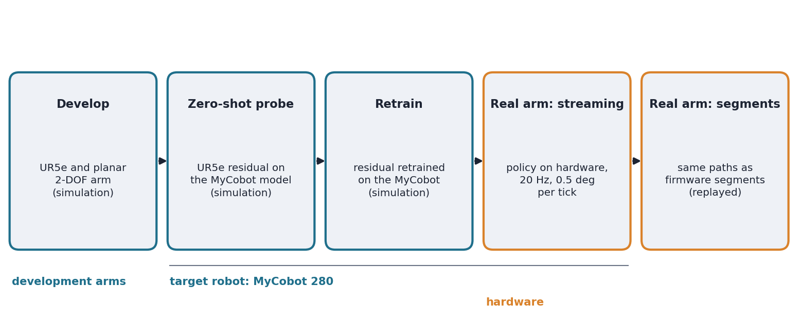
1.6 Problem Statement
Let q0 be the start configuration of an arm (the target is the MyCobot 280) and g a target tool pose, with a set of obstacles in the workspace. A cheap planner with a budget of N collision checks produces a reference path qref; a tracker follows it. The goal is a residual policy πres such that the combined controller reaches g within 1 cm and 5° without collision, in at least as many episodes as a full-budget planner (B2), and with the collision rate of B2.
1.7 Research Objectives and Questions
The objectives of this project are:
- to build a reproducible simulation benchmark for six-dimensional pose reaching among obstacles, with frozen test sets and planner baselines at three budgets;
- to design and train residual controllers on top of a cheap planner, and to measure them against the planner alone and the full planner;
- to explain, with measurements, why a residual succeeds or fails;
- to deploy the controller on the target arm, the MyCobot 280, in simulation and on the real arm, and to check whether the findings from the development arms hold there.
| RQ | Question | Experiment |
|---|---|---|
| RQ1 | Which off-policy algorithm learns 6D reaching best under a fixed budget, SAC or TD3 (with HER)? | E1, PE1 |
| RQ2 | Do sparse rewards with HER beat dense shaped rewards? | E2, PE2 |
| RQ3 | Can a learned residual on a cheap RRT-Connect planner match the full planner’s success and collision rate? | E5, E5b, PE3, PE4, PE4b |
| RQ4 | Does a residual help where the base has a systematic model error (torque control, wrong masses)? | PE8 |
| RQ5 | Do design rankings from the cheap planar arm predict the UR5e? | PE9-lite |
| RQ6 | Do the findings hold on the target arm (the MyCobot 280), on harder scenes and with non-spherical obstacles, and on real hardware? | Target-robot results: MyCobot 280 simulation, challenge sets, shape set, real-arm runs |
1.8 Major Contributions of the Thesis
- A reproducible benchmark. A MuJoCo model of the UR5e with a gripper, frozen test sets, planner baselines at three budgets and a pure-RL reference, with every decision recorded in a versioned specification before the result it affects was seen.
- A diagnosed negative result. Two residual designs, the measured cause of each failure, and the authority–safety dilemma they bracket.
- Three reusable findings on goal-conditioned training. Silent defects of HER training with their tested fixes.
- A planar 2-DOF companion study. It reproduces the headline result, ranks design choices in agreement with the UR5e in 8 of 9 comparisons, and finds the one setting where a residual helps.
- A target-robot deployment. A MyCobot 280 deployment with its own simulation model, retrained residuals, a hardware runner with safety checks, 60 real-arm runs (30 streamed and 30 as firmware segments) and 14 further runs on the challenge and shape scenes, trajectory-quality and accuracy measurements, a motion diagnostic of the arm, and synchronised videos of the real arm, its digital twin and the simulation (three- and five-panel layouts, drawn with the manufacturer’s shell meshes).
- Harder scenes and other obstacle shapes. Two additional test sets, with the planner and policy results on them.
1.9 Organisation of the Thesis
Chapter 2 reviews related work. Chapter 3 formulates the problem and the theory the method rests on. Chapter 4 describes the cheap planner, the two residual designs, the training safeguards and the real-arm setup. Chapter 5 gives the experimental setup, the test sets and the verification work. Chapter 6 reports and discusses the results of the UR5e study, the planar study and the target-robot results. Chapter 7 concludes. Appendix A contains two short derivations and Appendix B the commands for reproducing the results.
Chapter 2Literature Review
2.1 Overview and Taxonomy
This chapter reviews the work on which the project builds and says, for each approach, how it works, where it is strong, where it is limited and how it relates to this thesis. It is organised from the classical planners that the controller is built on (Sections 2.2 and 2.3), through the learned planners that compete with them (Section 2.4), to the reinforcement-learning machinery used for the residual (Sections 2.5 to 2.7), the work on making learning safe (Section 2.8) and on moving from simulation to small real arms (Section 2.9). Section 2.10 collects what is missing and links it to the research questions.
Figure 2.1 arranges the approaches to manipulator motion planning in three families. Classical planners search for a collision-free path (sampling-based methods) or improve an initial trajectory (optimisation-based methods), and they come with guarantees but need computation at planning time. Learned planners move that computation into training: they imitate a classical planner or are trained by reinforcement learning, and they are fast at run time but offer no guarantee. Hybrid approaches keep the classical planner and use learning to help it, by proposing where to sample, by acting as its local planner, or, as in this thesis, by correcting the commands that follow its path.
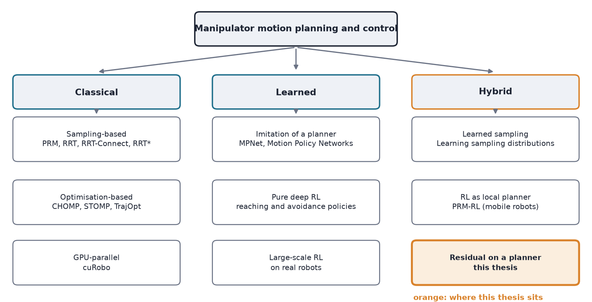
2.2 Sampling-Based Motion Planning
Roadmaps and trees. Sampling-based planners avoid building the configuration space explicitly. Probabilistic roadmaps (PRM) sample many collision-free configurations, connect nearby pairs by edges that a local planner can follow, and then answer queries by connecting the start and the goal to this graph and searching it [16]. The roadmap is built once and reused, which suits repeated queries in a fixed scene (Figure 2.2a). Rapidly exploring random trees (RRT) instead grow a tree from the start for one query: a random configuration is sampled, the nearest tree node is extended towards it, and the tree therefore spreads quickly into unexplored regions [17] (Figure 2.2b). RRT-Connect grows two trees, one from the start and one from the goal, and after each extension of one tree it tries to extend the other repeatedly, greedily, towards the new node (Figure 2.2c). This connect step usually makes it faster than a single tree on manipulator problems, and it is the planner used here for the full planner B2 and, with a small budget, for the cheap planner [1].
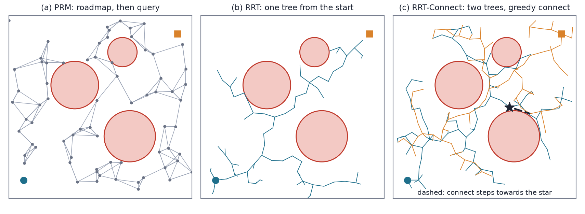
Guarantees. PRM and RRT are probabilistically complete: if a path exists, the probability that they find it tends to one as the number of samples grows. They do not minimise path length, and the first path found is jagged. Asymptotically optimal variants (RRT*, PRM*) rewire the graph as samples are added so that the best path converges to the optimum, at a higher cost per sample [18]. In practice the raw path is shortened by shortcutting, which replaces stretches by straight edges when they are free, and is then time-parameterised into a trajectory that respects joint speed and acceleration limits. Here the time-scaling is a quintic polynomial (Section 3.5).
Cost. The cost of a sampling-based planner is dominated by collision checking: every sampled configuration and every point along every edge needs a forward-kinematics evaluation and a set of distance tests (Section 3.4). The number of collision checks is therefore a hardware-independent measure of effort, and it is the budget that this thesis varies: a cheap planner is one that may use only 1,500 to 6,000 checks (Section 4.3). The measured wall times are in Table 4.3. The planners are available to practitioners in the Open Motion Planning Library (OMPL) [19] and, for manipulators, in MoveIt, which builds on it [20]; these are the tools that a user of a small arm such as the MyCobot would normally use.
Limits. A sampling-based planner has no notion of path quality, can be slow in narrow passages (where few samples fall), and its running time varies from query to query. When the budget is small the planner can fail to find a path at all, and what a robot should then do is a design decision. This thesis uses a straight line to the goal, which is simple and often wrong; Chapter 6 shows that most of the cheap planner’s failures are collisions (Section 6.3).
2.3 Optimisation-Based Motion Planning
Trajectory optimisation treats planning as minimising a cost over a whole trajectory. CHOMP starts from an initial trajectory, typically a straight line in joint space, and improves it by covariant gradient descent on a cost that adds a smoothness term and an obstacle term computed from a signed distance field [21]. STOMP perturbs the trajectory with noise, evaluates the cost of the noisy copies and updates towards the cheaper ones, so it needs no gradient of the cost and can handle costs that are not differentiable [22]. TrajOpt solves a sequence of convex problems in which the collision constraints are linearised using signed distances between convex shapes, and it checks the collision-free condition between waypoints as well as at them [23]. Because the optimisation is local, its result depends on the initial guess: an initial path on one side of an obstacle converges to a path on that side, and one that crosses the obstacle may be stuck in contact (Figure 2.3). Optimisation therefore gives smooth, short trajectories when it works but no guarantee of finding a collision-free one, which is why it is often run after, or beside, a sampling-based planner that supplies the initial guess.
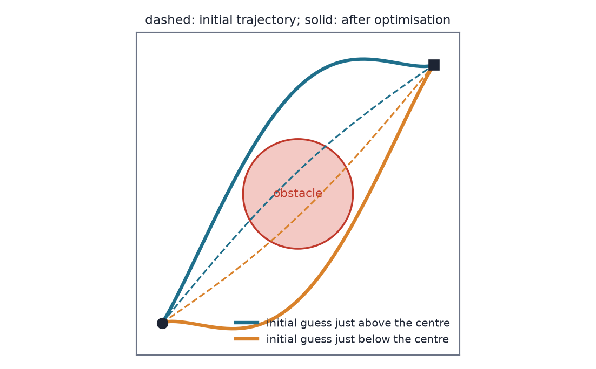
Parallel hardware. cuRobo moves the whole pipeline, including collision checking and trajectory optimisation, onto the graphics processor and runs many seeds in parallel, which brings collision-free minimum-jerk motion generation down to a small fraction of a second on an industrial arm [8]. It shows that planning cost can also be cut by hardware. The thesis cuts it the other way, by limiting the checks, because the target is a small arm run from a laptop. Neither optimisation nor GPU planning is used in this project, but both define what a “strong” planner is, and the full planner B2 of this report plays that role only for the one planner family it implements.
2.4 Learning-Based Motion Planning
Imitation of a planner. Motion Planning Networks (MPNet) train a neural network on paths produced by a classical planner. An encoder network summarises the obstacle point cloud, and a planning network predicts the next configuration from the current one, the goal and the encoding; the network is called repeatedly to build a path, and a hybrid version combines it with classical replanning when the network fails [9, 53]. Motion Policy Networks train a policy on about three million planning problems generated in simulation from point clouds, and the policy produces motion in closed loop from a single depth image, so it can react to changes in the scene [10]. Both are fast once trained and avoid the cost of searching, but they need a large dataset of expert plans, they generalise only as far as the data do, and a pure network offers no guarantee that its motion is collision-free.
Reinforcement learning without an expert. Deep reinforcement learning has also been used to learn collision avoidance directly, with an agent trained by trial and error. For industrial arms, one approach gives the agent distance-sensor readings as the observation [11], and another proposes a single paradigm for several robots [12]. These methods need no expert plans, but they need a large number of simulated interactions, a carefully designed reward, and a transfer step to hardware, and their safety is shown empirically.
Learning to help the planner. A third group keeps the planner. Learned sampling distributions train a network to propose the regions of configuration space in which a sampling-based planner should draw its samples, so that fewer samples are wasted [24]. PRM-RL builds a roadmap whose edges are kept only if a learned point-to-point policy can follow them, so the policy acts as the local planner; it was demonstrated on mobile robots in long-range navigation [25]. Table 2.2 compares the approaches on the dimensions that matter for choosing among them.
| Approach | Training data | Guarantee | Cost at run time |
|---|---|---|---|
| RRT-Connect (classical) [1] | none | probabilistically complete | search; varies per query |
| MPNet [9, 53] | expert paths from a classical planner | network alone: none; hybrid mode adds classical replanning | network passes; fast |
| Motion Policy Networks [10] | about three million simulated problems | none | one network pass per control step |
| Deep-RL planners [11, 12] | simulated interaction, no expert | none | one network pass per control step |
| Learned sampling [24] | planning problems and solutions | kept by the planner that still searches | search, with fewer samples |
| Residual on a cheap planner (this thesis) | simulated interaction (no expert plans) | none for the correction; the planner’s path is the reference | cheap search plus one network pass per step |
The relation to this thesis is that the learned planners replace the classical planner and so inherit the cost of collecting data and give up its guarantee, while the hybrid methods keep it. This thesis belongs to the second group but differs from the other hybrids in what the learned part acts on: not the samples and not the edges of the roadmap, but the commands that follow the finished path.
2.5 Reinforcement Learning for Manipulation
The algorithms. An actor-critic method keeps two networks: an actor that chooses actions and a critic that estimates how good a state and action are; the critic is trained to be consistent with the rewards received, and the actor is updated in the direction that the critic says improves the return (Figure 2.4a). Deep Q-networks showed that a network could learn from raw experience with the help of an experience replay buffer and a slowly changing target network, but they handle discrete actions only [43]. DDPG extended the idea to continuous actions with a deterministic actor and a critic over state and action, and it is effective but sensitive to its hyperparameters [2]. TD3 reduced the critic’s over-estimation with two critics, delayed actor updates and smoothed targets [3]. Soft Actor-Critic (SAC) maximises the return plus an entropy bonus, keeps a stochastic actor that explores in a controlled way and tunes the weight of the bonus automatically [4, 39]. PPO is the standard on-policy alternative: it clips the size of each policy update and is stable, but it discards data after each update [13] (Figure 2.4b). The comparison of these algorithms under a fixed step budget is research question RQ1.
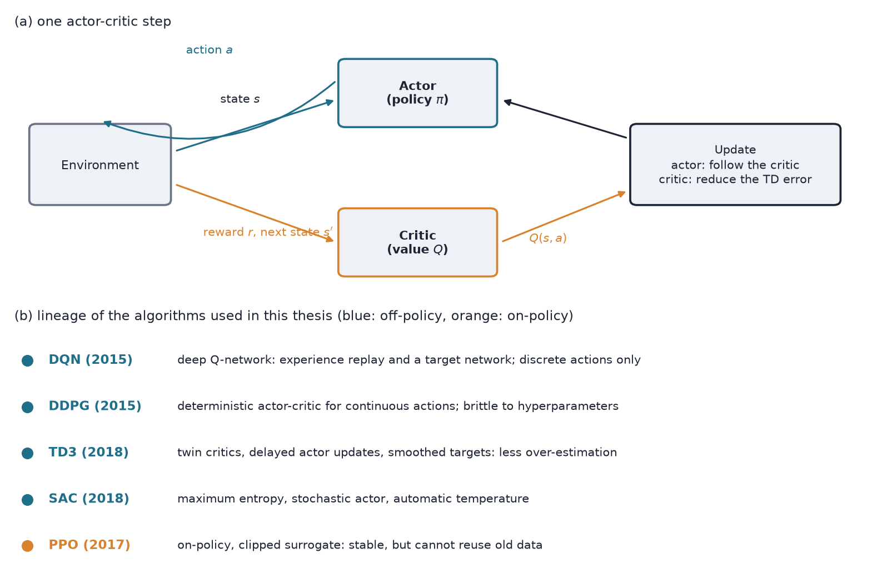
Off-policy and on-policy. An off-policy method learns from transitions collected by older versions of the policy, stored in a replay buffer. This makes it far more sample-efficient than an on-policy method, which matters when each sample is a simulated or real robot step, and it is a precondition for hindsight experience replay, which changes the stored goal of a transition after the fact (Section 2.6).
Manipulation on real robots. Several lines of work trained neural policies for manipulation on real arms. End-to-end training of visuomotor policies maps camera images to joint torques for tasks such as inserting objects [46]. Off-policy updates collected asynchronously on several robots made it practical to learn tasks such as opening a door on real hardware [48], and QT-Opt scaled grasping to many robots and a very large number of real attempts [47]. These results show that learning on arms is possible, but they use industrial or research arms with good low-level control and large amounts of data. The present thesis uses a modest budget (one million steps per run on a laptop) and a small, low-cost arm.
Evaluation. Reinforcement-learning results vary a great deal with the random seed, so conclusions drawn from a few runs can be wrong. The recommendations for deep RL evaluation are to report intervals and not only means, and to be careful with few seeds [15]. This report follows them: results are given as the seed mean with a bootstrap interval, and, because few seeds give wide intervals, with a pooled Wilson interval over test episodes (Section 3.12).
2.6 Goal-Conditioned Reinforcement Learning and Hindsight Experience Replay
A goal-conditioned policy takes the goal as an additional input, so that one network can reach many goals. Universal value function approximators generalise the value function to depend on the goal as well as the state [44]. The reward for reaching tasks is naturally sparse (the task is either done or not), and a sparse reward gives an agent almost no signal early in training, when almost every episode fails. Hindsight experience replay (HER) turns a failed episode into a successful one for a different goal: the transitions of the episode are stored again with the goal replaced by a configuration that the arm did reach, and the reward is recomputed for the new goal (Figure 2.5) [5]. The replacement goals can be the final state, a later state of the episode (the future strategy), or random states; the future strategy worked best on the robot-arm tasks of the original paper and is used here. A collection of goal-conditioned robotics environments and the practices around them are described in [45].
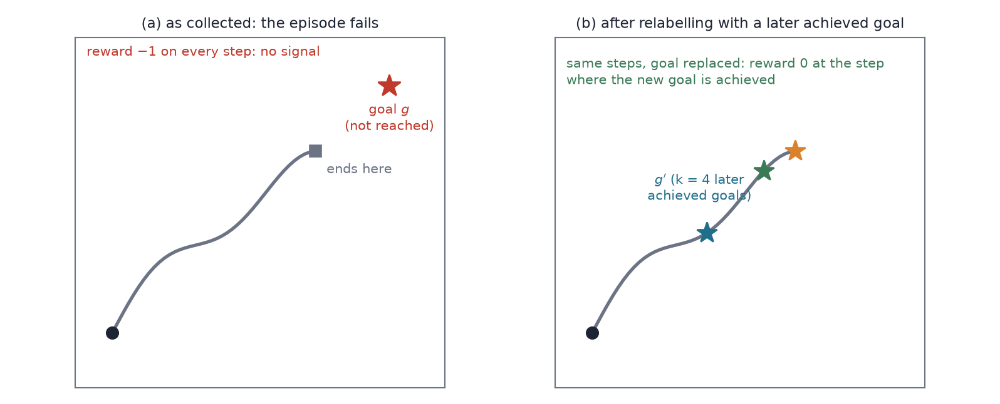
HER rests on an assumption: the reward must be a function of the achieved goal and the desired goal alone, so that it can be recomputed for any replacement goal, and nothing else in the transition may depend on the goal. This is easy to state and easy to violate. Observation features computed from the goal, and penalties that live in the transition (for example for a collision) and not in the goal, break it, and the failure is silent: training runs and the policy simply learns less. Section 5.9 reports three such defects found in this project, and Section 3.9 states the conditions precisely.
2.7 Residual Policy Learning
A residual policy does not learn a behaviour from scratch: it adds a learned correction to the action of a fixed controller, so that learning starts from the controller’s competence and only has to learn what it lacks. Silver et al. introduced residual policy learning and showed that a learned residual can improve hand-designed controllers, including ones that are partly wrong, on manipulation tasks in simulation [6]. Johannink et al. combined a conventional feedback controller with a reinforcement-learned residual for a contact-rich insertion task on a real robot, where the conventional controller handles the free motion and the residual handles the contact [7]. TossingBot learns a residual on top of a physics-based throwing controller, so that the network corrects the errors of the analytic model and generalises to objects that the model gets wrong [32]. Residual reinforcement learning from demonstrations starts from a demonstrated base behaviour and learns a residual on sparse-reward manipulation tasks [33]. The shared idea is that the base is good but imperfect and that the correction can be small.
The gap this thesis studies. In all of these the base is a controller that reacts to the state: its command at each step depends on where the robot is now, so a correction that moves the robot is followed by a base that responds to the new situation, and the corrected behaviour persists (Figure 2.6a). The base in this thesis is different. It follows a path that was planned in advance and is indexed by time, and its tracker re-aims at the reference point every step, so a correction in the previous step is erased in the next (Figure 2.6b). Whether a residual helps such a base was not, to my knowledge, studied, and the answer in this project is that the additive form cannot (Section 6.4). The prior work does show where a residual does pay off: when the base has a systematic model error, as in TossingBot’s physics model or in the torque-control experiment of Section 6.5.
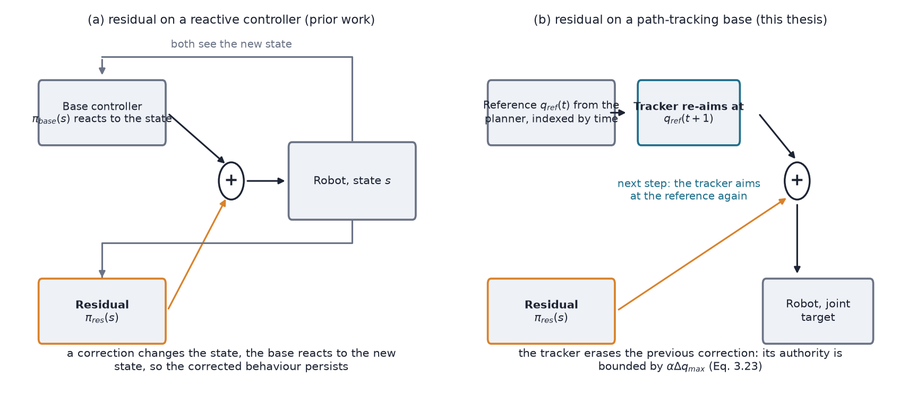
2.8 Safe Reinforcement Learning
The measurements of this thesis show an authority–safety dilemma (Section 6.4): a correction small enough to stay on the planner’s safe path cannot fix its failures, and one large enough to fix them leaves it. This is the problem that safe reinforcement learning addresses, and its methods are the candidates for resolving it. Surveys distinguish methods that change the optimisation criterion, for example by adding a constraint, from methods that change the exploration process or filter the actions [26], and place them in the wider field of safe learning-based control [52]. Constrained policy optimisation bounds the expected cost of a policy update, so that the policy stays approximately within a constraint during learning [27]. Shielding monitors the agent and replaces any action that would violate a specification by a safe one, and was developed for discrete systems with temporal-logic specifications [28]. A safety layer sits after the policy and corrects its action by a linear model of the constraint that is learned from data [29]. Control barrier functions give a condition on the action under which a safe set of states stays invariant, and the safe action closest to the desired one is found by solving a small optimisation problem at each step [30]; combining a barrier-function controller with a model-free policy and learning the model error keeps exploration safe in continuous control [31].
For a residual on a planner these suggest a concrete fix: let the residual be free, and filter its output so that it never takes the arm into contact. This is the safety-filtered residual proposed as future work (Section 7.5). It needs a model of the clearance of each link, which the planner’s collision model already provides (Section 3.4), but it was not tested in this project.
2.9 Simulation to Real and Low-Cost Arms
The simulation gap. A policy trained in simulation meets a different arm on hardware. Domain randomisation trains over varied simulator parameters, so that the real arm looks like one more variation; it was shown first for vision [34] and then for dynamics, for a pushing task on a real arm [49]. Later work adapts the randomisation distribution using a little real experience [50]. Other remedies are system identification and residual physics, in which the analytic model carries the main behaviour and a network learns the error [32]. Surveys list these and their limits [35], and a review of experience in training real robots with reinforcement learning stresses practical issues such as resets, safety and reward design [36]. Simulators such as MuJoCo [37] and libraries such as Stable-Baselines3 [38] are the common tools; both are used here.
Low-cost arms. Low-cost and educational arms differ from the research arms of the studies above in ways that matter for learning. Their servos have a deadband and limited resolution, their joints are not rigid, their command rate is low and their reported joint angles lag and are noisy. ALOHA showed that with a careful policy design and teleoperated demonstrations, low-cost hardware can perform fine-grained bimanual manipulation [51]. Work on learning for low-rigidity arms deals with the same issues from the perception side: self-supervised learning of visual servoing was applied to a low-rigidity six-axis arm, the MyCobot, to cope with changes in the body over time [54], and a later study used a low-cost low-rigidity arm for language-guided view control [55]. The position, velocity and step limits of this thesis’s MyCobot 280 (Section 5.7) were measured because such properties cannot be assumed.
The MyCobot 280. The MyCobot 280 is a six-joint arm with a working radius of about 280 mm, supplied with the pymycobot Python library and a ROS description package [40–42]. I searched arXiv, Crossref and the web for published work using this arm, or comparable small arms, for reinforcement learning or motion planning. I found no peer-reviewed study that plans collision-free motion with the MyCobot 280 or trains a reinforcement-learning policy on it; the work I found used it for visual servoing [54], and the web results were tutorials by the manufacturer and by users, among them an imitation-learning example in simulation and a reinforcement-learning gripping example in a GPU simulator, which are not peer-reviewed and are not cited. This is a statement about what these searches returned, not a proof that no such work exists.
2.10 Limitations of Existing Methods and Research Gap
| Approach | Keeps a classical planner | Learns a correction | Studies a path-tracking base | Real arm | Low-cost arm |
|---|---|---|---|---|---|
| RRT-Connect, shortcut, time-scaling [1] | Yes | No | n/a | Widely used | No study found |
| cuRobo [8] | Yes (GPU-parallel) | No | n/a | Yes | No study found |
| CHOMP, STOMP, TrajOpt (optimisation) [21–23] | No (optimises a trajectory) | No | n/a | Yes | No study found |
| Motion Planning Networks, Motion Policy Networks [9, 10] | No (imitates it) | Replaces it | No | Partly | No study found |
| Deep RL planners [11, 12] | No | Replaces it | No | Partly | No study found |
| PRM-RL [25] | Yes (roadmap) | Learns the local policy | No | Mobile robots | No study found |
| Residual policy learning [6, 7] | A reactive controller | Yes | No | Yes [7] | No study found |
| Learning on low-rigidity arms [54] | n/a | Learns visual servoing | n/a | Yes (MyCobot) | Yes |
| This thesis | Yes (cheap RRT-Connect) | Yes (additive, offset) | Yes | Yes (MyCobot 280) | Yes (MyCobot 280) |
Five gaps follow from the review, and each is tied to a research question of Section 1.7.
- Residuals on path-tracking bases are unstudied (RQ3). The residual literature uses reactive bases. Whether a learned correction can fix a planned path that is followed by a tracker is open, and the tracker may undo it.
- The authority–safety trade-off of a residual on a planner has not been measured (RQ3). Safe-learning methods address safety in general; how much authority a residual needs to repair a planner, and how much safety it loses in using it, has not been quantified.
- The planner’s budget is not treated as a design variable (RQ3). Learned planners replace the planner, and the optimisation literature takes it as given; the question “how cheap may the planner be if a learned part helps it” is not asked.
- Design choices are rarely checked against the truth or across arms (RQ1, RQ2, RQ4, RQ5). Which algorithm and reward fit reaching under a fixed budget, whether a residual helps under model error, and whether results on a cheap exact arm predict a six-joint arm are answered by this thesis with a planar arm whose configuration space is known.
- Small low-cost arms with learned control and planning are absent from the literature I found (RQ6). No peer-reviewed study of collision-free planning or RL on the MyCobot 280 was found, and the properties that decide whether a simulated policy transfers (deadband, lag, step limits) have to be measured; this thesis does that and tests the controller on the real arm.
2.11 Chapter Summary
Classical planners are reliable with a large budget and fragile with a small one, optimisation-based planners depend on their starting trajectory, and learned planners either replace the classical ones or guide them. Reinforcement learning with off-policy actor-critic methods and hindsight relabelling can learn goal reaching, and residual learning corrects reactive controllers. Safe reinforcement learning offers filters that keep a correction inside a safe set, and domain randomisation and residual methods are the usual remedies for the gap to a real arm. None of these studies a residual on top of a base that tracks a planned path, and none was found on the MyCobot 280. Chapter 3 formulates the problem that combines the two.
Chapter 3Problem Formulation and Theoretical Background
3.1 Introduction
This chapter fixes the notation and states the building blocks of the method, in the order in which the controller uses them. It starts with the target robot: the kinematics of the MyCobot 280, its Jacobian and the damped least-squares inverse kinematics that turn a tool pose into joint angles (Section 3.3), and the configuration space and collision model in which planning happens (Section 3.4). It then describes the cheap planner, RRT-Connect, and its three degradations (Section 3.5). The learning part follows: the pose-reaching task as a Markov decision process (Section 3.6), the rewards and the absorbing collision penalty (Section 3.7), Soft Actor-Critic (Section 3.8) and hindsight experience replay (Section 3.9). The last sections define the tracking controller, the two residual formulations with a short derivation of the residual’s authority bound (Sections 3.10 and 3.11) and the evaluation metrics (Section 3.12). Chapter 4 assembles the pieces into the full controller.
3.2 Notation
Scalars are written in italics (t, α), vectors in bold or with a subscript (q, a) and sets in calligraphic letters. The List of Symbols at the start of this report gives the main notation. Quantities that differ between the UR5e and the MyCobot 280 (Δqmax, control rate, obstacle sizes) are given for both in Table 4.1. The MyCobot 280 is the worked example throughout this chapter; the UR5e differs only in its kinematic constants and in the step size.
3.3 Kinematics of the MyCobot 280
Frames. The MyCobot 280 is a serial arm with six revolute joints. Its geometry is taken from the manufacturer’s URDF description (the mycobot_ros package, reference [42]). Each joint i is described by a fixed transform Fi (a translation and a roll–pitch–yaw rotation from the previous joint frame) followed by a rotation of qi about the local z axis. The base sits 0.13156 m below the first joint; the later joints are offset by 0.1104 m (to the third joint), 0.096 m and 0.0646 m (to the fourth), 0.0732 m (fifth) and 0.0456 m (sixth). Figure 3.1 shows the joint origins and axes for two poses. The simulation limits are the conservative limits used on the real arm: ±170°, −130° to 85°, ±155°, ±165°, ±165° and ±180° for joints 1 to 6.
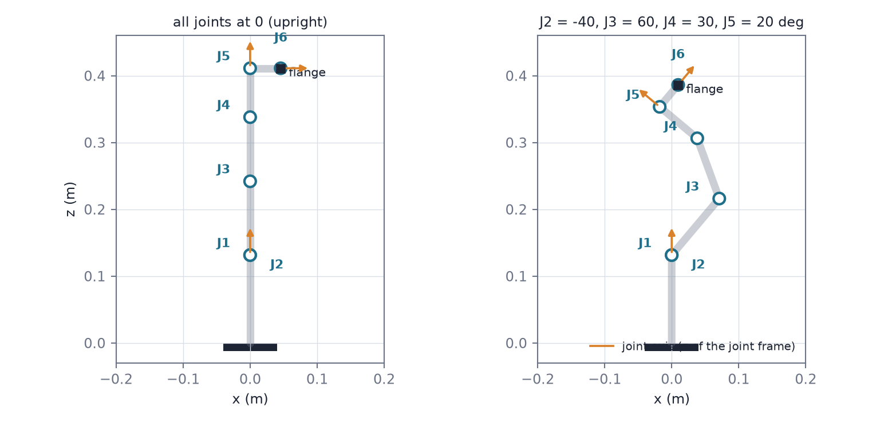
Forward kinematics. The pose of the flange (the output frame of joint 6) in the base frame is the product of the fixed transforms and the joint rotations, and the tool point is the flange origin plus a tool offset t expressed in the flange frame:
With the fitted tool offset of (7.2, −5.3, 0.8) mm, this model agrees with the arm’s own coordinate read-out to 3.6 mm RMS (6.0 mm at worst) on 15 test poses, which sets the accuracy of every position claim made about the real arm (Section 5.7).
Jacobian. For a revolute joint i with axis zi through the origin oi, the tool velocity is linear in the joint velocities. The linear and angular rows of the Jacobian are
where ṗ stacks the tool’s linear and angular velocity. J is a 6 × 6 matrix. It loses rank at singular configurations (for example a fully stretched arm), where some tool motions need unbounded joint speed.
Inverse kinematics. The MyCobot has offsets between its axes, so its inverse kinematics has no simple closed form, and the project solves it numerically with damped least squares. Given a goal pose with position pg and rotation Rg, let e = [pg − p; w r] be the pose error, where r is the axis–angle vector of RgRT and w = 0.5 weights rotation against position (1 rad counts as 0.5 m). Each iteration updates the joints by
The damping keeps Δq bounded near singularities at the price of a slower, slightly inexact step, and it grows with the error so that early steps are cautious and late steps are accurate. Each step is also limited to 0.3 rad in its largest joint, and 60 iterations are run for all seeds at once. The solver starts from 48 seeds (the start configuration and 47 random configurations inside the limits), because the equations have several solutions: a six-joint arm can reach one pose with different elbow, shoulder and wrist branches. A result is kept if it lies within the limits and the pose error is below 0.1 mm and 0.1°, and solutions closer than 0.05 rad to one already found are merged. The planner picks, among these, the collision-free solution nearest to the start configuration. Goals are not generated with this routine: they are sampled in joint space and mapped through forward kinematics (Section 3.6), so inverse kinematics is needed only by the planner.
3.4 Configuration Space and Collision Checking
Planning is easiest in configuration space, the space of joint vectors q within the joint limits. A workspace obstacle becomes a set of configurations at which some link touches it, and the arm is a single point moving among these sets (Figure 3.2). Writing A(q) for the volume occupied by the arm and O for the obstacles, the free space is
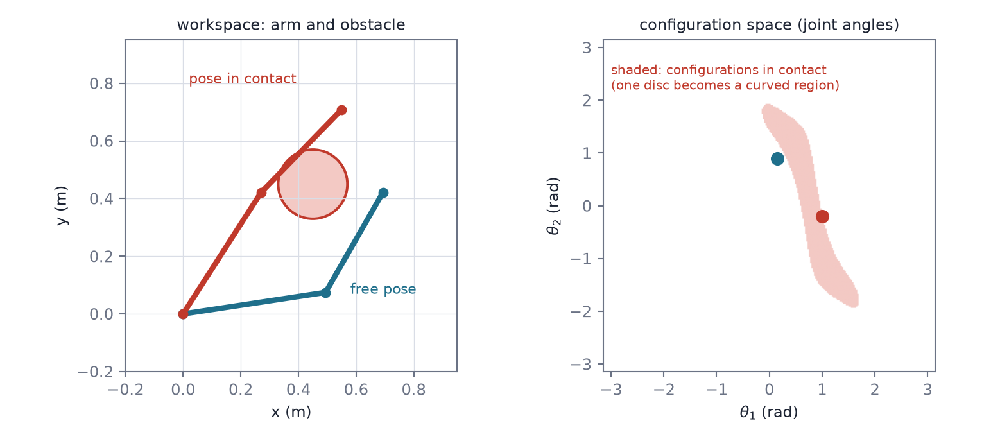
The planar 2-DOF arm of this project has the property that its configuration space can be computed exactly on a grid, as in Figure 3.2, which is why it was used to check design questions cheaply. For the six-joint arms this is impossible, and the free space can only be probed one configuration at a time.
Capsule and sphere checks. The collision model approximates each link by a capsule, a line segment of radius ρk, and a tool capsule at the tip. The training obstacles are spheres with centre cj and radius rj, so the signed clearance of link k from obstacle j is
A configuration is in Cfree when every dkj is positive and the links do not touch each other or the table. One collision check is one forward-kinematics evaluation and these distance tests. An edge of the planner is checked at a resolution of 0.01 rad, so a long edge costs tens of checks, and the checks, not the sampling, dominate the planner’s cost. The number of checks is therefore the quantity that the cheap planner’s budget limits (Section 3.5). The simulator itself detects contact with MuJoCo; the planner’s checker and the simulator use the same geometry. Boxes and cylinders (Section 4.8) are checked with their exact shapes.
3.5 RRT-Connect and the Cheap Planner
RRT-Connect (reference [1]) grows two trees in configuration space, one from the start and one from the goal, and tries to join them. In each round it samples a random configuration, extends the first tree one step towards it, and, if that succeeded, repeatedly extends the other tree towards the new node until it either reaches it (the trees are joined) or is blocked. The roles of the trees then swap. Figure 3.3 shows a run on a two-dimensional space with a wall that has one gap.
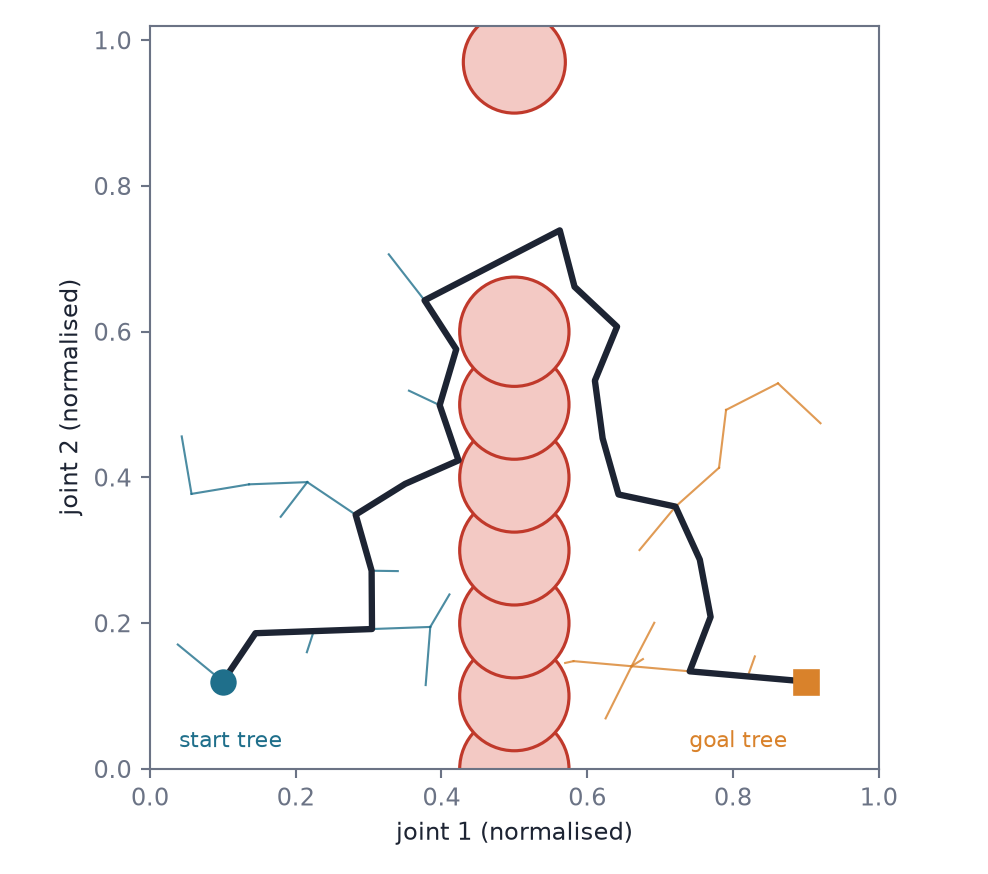
Algorithm 3.1 RRT-Connect with a collision-check budget N
T_a.init(q_start); T_b.init(q_goal); checks = 0
while checks < N:
q_rand = SampleConfiguration()
(status, q_new) = Extend(T_a, q_rand)
if status != Trapped:
while (status2, q2) = Extend(T_b, q_new) is Advanced: continue
if status2 == Reached: return Path(T_a, T_b)
swap(T_a, T_b)
return Failure
Extend(T, q): q_near = Nearest(T, q)
q_new = q_near moved towards q by at most 0.3 rad
if the edge q_near -> q_new is collision-free (checked every 0.01 rad, each check counts):
add q_new to T; return Reached if q_new == q else Advanced
return Trapped
The tree search is probabilistically complete: if a path exists, the chance of finding it tends to one as the number of samples grows. It does not minimise length, so the raw path is jagged. It is therefore shortened by shortcutting (replace a stretch of the path by a straight edge whenever that edge is free) and then turned into a trajectory by time-scaling. Here the time-scaling is a quintic polynomial, s(τ) = 10τ3 − 15τ4 + 6τ5 for τ ∈ [0, 1], which has zero velocity and acceleration at both ends, and the duration is chosen so that the joint speed and acceleration limits hold.
The full planner (B2) is this algorithm in joint space with exact obstacles, a 2 s cap, 200 shortcut iterations and quintic time-scaling. The cheap planner (Base@N) is the same algorithm with three deliberate degradations: a budget of N ∈ {1500, 3000, 6000} collision checks (the while condition of Algorithm 3.1; a full-length extension of 0.3 rad costs about 30 checks at 0.01 rad per check, so 1500 checks allow about 50 of them), obstacles inflated (5 cm on the UR5e; 1.7 cm on the MyCobot) except within 0.3 rad of the start and goal, and 20 instead of 200 shortcut iterations. If planning fails within the budget, the base falls back to a straight joint-space line to the nearest collision-free inverse-kinematics solution, ignoring obstacles. The fallback is why a failed plan still moves the arm, and why most of the cheap planner’s failures are collisions.
Test scenes are kept only if B2 finds a path. B2 is therefore a ceiling for the scene set, not an independent estimate of how hard it is.
3.6 The Pose-Reaching Task as a Markov Decision Process
The reaching task is a goal-conditioned Markov decision process. At each control step the agent observes a state st and a goal g, chooses an action at, receives a reward rt and moves to st+1. The arm has n position-servoed joints, and the action a ∈ [−1, 1]n is integrated into a joint target instead of being applied as an absolute position:
The target may lead the measured joint angles by a bounded amount, so the target cannot wind up while the arm is blocked. A goal g is a nine-dimensional vector: the tool position and the first two columns of the rotation matrix, the continuous six-dimensional rotation representation [14]. Goals are sampled in joint space and mapped through forward kinematics, with configurations in collision rejected, so every goal is reachable. An episode succeeds when the tool is within 1 cm and 5° of the goal:
The observation contains the joint angles (as sine and cosine and normalised), joint velocities, the tool pose, the previous action and the gap between target and measured joints. Obstacle stages add four obstacle slots (centre, radius, mask) and the clearance of each link and the gripper, clipped at 0.3 m. The goal error is computed inside the policy from whichever goal is in use, a design that matters for hindsight relabelling (Section 5.9).
The discounted return from step t is the quantity the agent maximises. The value of a state and the action value Q are its expectations under the policy π, and the optimal action value satisfies the Bellman optimality equation:
A worked example. Take the sparse reward (−1 on every step until success, 0 after) and γ = 0.98. An episode that succeeds after T steps has return −(1 − γT)/(1 − γ), which is −16.6 for T = 20, −35.1 for T = 60 and −49.1 for an episode that times out after 200 steps. A faster success is better, and any success is better than a timeout. A crash that ended the episode with a reward of −1 on that step only would have a return of −1, better than all of them, which is the exploit described in Section 3.7.
3.7 Rewards and Collisions
Two reward modes are used. The sparse reward is 0 on success and −1 otherwise. The dense reward is a weighted sum of position and orientation error, effort and smoothness terms and a success bonus. In obstacle stages both add a clearance-margin penalty that applies when any link is closer than dsafe to an obstacle.
A collision ends the episode. The penalty at that step is not a fixed number but an absorbing value chosen so that crashing is always worse than surviving to the end:
Here rmin is the most negative reward the environment can give in one step, which comes to −207.5 (sparse) and −663.8 (dense) on the UR5e. The value rmin/(1 − γ) is the return of staying in the worst possible state forever, so no sequence of later steps can be worse than the crash, and the example of Section 3.6 shows the ordering (a crash at −50 is below a timeout at −49.1 when rmin = −1 and γ = 0.98). Appendix A.2 proves the ordering. A fixed −10 collision reward, used first, made crashing the best-paying behaviour (Section 5.9).
3.8 Soft Actor-Critic
The pure-RL agents and the residual are trained with Soft Actor-Critic (SAC, reference [4]), an off-policy actor–critic algorithm for continuous actions. It maximises the return plus an entropy bonus, so the policy stays stochastic and keeps exploring while it improves:
Two critics Qθ1, Qθ2 are trained on transitions drawn from a replay buffer towards the soft Bellman target, which takes the smaller of the two target critics to reduce over-estimation (the idea of TD3, reference [3]) and subtracts the entropy term:
The actor outputs the mean and spread of a squashed Gaussian and is trained through the reparameterised action a = tanh(μ + σε), so the gradient of the critic with respect to the action flows into the policy (Figure 3.4). The temperature α is adjusted automatically so that the policy’s entropy stays near a target H̄; the residual agents use −2 per action dimension, and the temperature starts at 0.01:
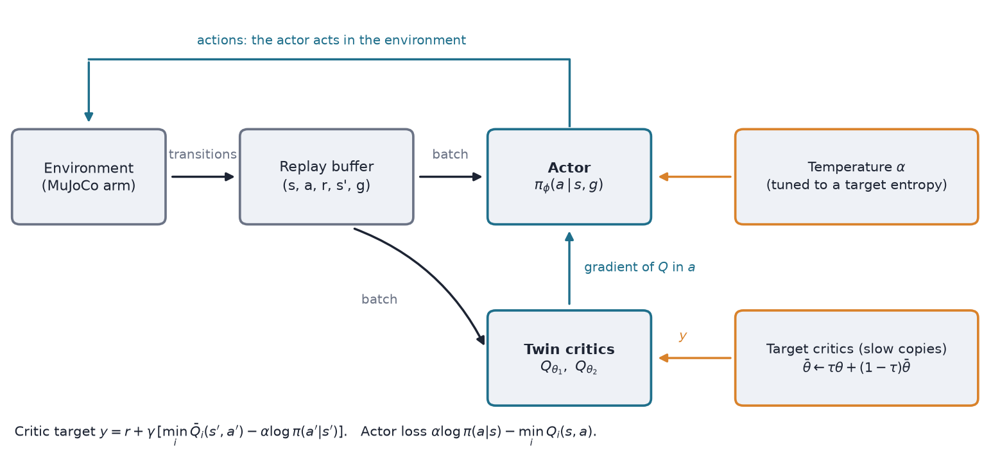
Algorithm 3.2 Soft Actor-Critic (one update) sample a batch (s, a, r, s', g) from the replay buffer a' ~ pi(. | s', g); y = r + gamma * ( min_i Qbar_i(s', a', g) - alpha * log pi(a' | s', g) ) for i in 1, 2: descend L_Q(theta_i) = (Q_i(s, a, g) - y)^2 a_new ~ pi(. | s, g) (reparameterised); descend L_pi = alpha * log pi(a_new | s, g) - min_i Q_i(s, a_new, g) descend L_alpha = -alpha * (log pi(a_new | s, g) + Hbar) thetabar_i = tau * theta_i + (1 - tau) * thetabar_i
The settings used for the residual are three hidden layers of 256 units, learning rate 3×10−4, batch 256, τ = 0.05, a replay buffer of up to one million transitions and 0.25 gradient steps per environment transition (Table 5.5). Because the data come from a replay buffer, SAC is off-policy: it can learn from transitions generated by older policies, and, as the next section needs, from transitions whose goal has been changed after the fact. An on-policy method such as PPO cannot do this.
3.9 Hindsight Experience Replay
With a sparse reward, almost every early episode fails and carries no learning signal. Hindsight experience replay (HER, reference [5]) turns a failure into a success for a different goal. After an episode that ended at the achieved goal agT, a stored transition (st, at, g, st+1) is also stored, or sampled, with the goal replaced by a goal that the arm did reach. In the future strategy used here the new goal is the achieved goal of a randomly chosen later step t′ ≥ t of the same episode, and the reward is recomputed for it:
With k relabelled goals per original one (k = 4 here), a fraction k/(k+1) = 80% of the sampled transitions carry a relabelled goal and 20% the original. HER therefore needs two things. First, the reward must be recomputable from the achieved and the desired goal alone. The part that depends on the goal, rgoal, is recomputed; every term that does not depend on it (collision, clearance, smoothness) is rindep and must be stored and carried along, or a relabelled crash would look like a success. Second, nothing in the observation may be computed from the goal, because after relabelling it would refer to the wrong goal; the policy network therefore forms the goal error itself from the goal it is given. The project’s three silent defects (Section 5.9) are violations of these two conditions. The residual agents are trained without HER, because a relabelled goal would not match the reference that the planner computed for the original goal.
3.10 The Tracking Controller
The reference path is followed by a tracker that aims the next integrated target at the next reference point:
When the command is not clipped, applying abase puts qtarget exactly on qref(t+1). The tracker therefore erases, at every step, whatever deviation from the reference the previous step introduced. This property decides the fate of the additive residual (Section 6.4).
3.11 Residual Formulations and the Authority Bound
Figure 3.5 shows the whole controller: the cheap planner produces the reference, the tracker follows it, and a residual policy adds a correction before the command is clipped and integrated. The residual sees the usual observation plus the reference at the current and the next fifth step. Two forms of the correction are studied.
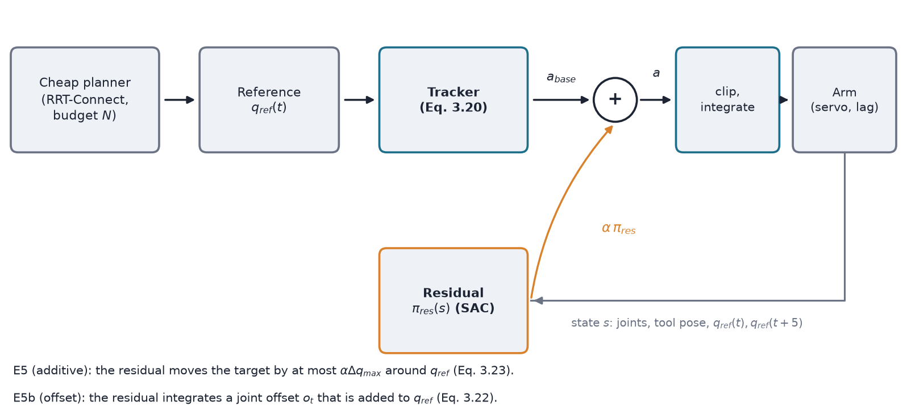
E5: additive residual. The residual’s output is scaled by α and added to the base command:
E5b: accumulated offset. The residual’s output integrates into a persistent joint offset, which can steer the target away from the reference:
The fade ft falls linearly to zero within 5 cm of the goal or over the last 10% of the reference, whichever comes first, so the target always returns to the true goal. The residual also sees qref(t) and qref(t+5).
The authority bound. The tracker of Equation (3.20) fixes how much the additive residual can do. Suppose the sum in (3.21) is not clipped. The new target is
because abaseΔqmax = qref(t+1) − qtarget and |πres| ≤ 1. Whatever the policy outputs, the target stays within αΔqmax of the reference on every step where the base command is not clipped: 0.012 rad on the UR5e and 0.0026 rad on the MyCobot 280. The next step starts again from the reference, so the deviations do not add up. This is the authority limit that Section 6.4 measures. Appendix A.1 gives the derivation in full. The offset form of Equation (3.22) removes the limit by letting deviations accumulate, up to the ±0.3 rad clip.
3.12 Evaluation Metrics
Each episode is classified as a success, a collision, a timeout or a pose miss (the episode ends without contact but outside the 1 cm / 5° tolerance). Success and collision rates are reported with the seed mean and a 95% bootstrap interval for trained methods, and with a Wilson interval for deterministic planners. Further metrics are final position and orientation error, path length, time to success, jerk, minimum clearance and planning latency.
3.13 Chapter Summary
The MyCobot 280 is modelled by the URDF chain, a numerical damped least-squares inverse kinematics and a capsule collision model, in which a collision check is the unit of planning cost. The cheap planner is RRT-Connect with a budget of collision checks, inflated obstacles and a straight-line fallback. The task is goal-conditioned pose reaching with an integrated joint target, trained with SAC and, for the pure-RL agents, hindsight relabelling that carries the goal-independent reward terms along. A tracker follows the planner’s path with the property that it cancels deviations, and two residual forms can be added: one bounded by the tracker (Equation 3.23), one persistent. Collisions end the episode with an absorbing penalty.
Chapter 4Proposed Framework: Cheap Planner with a Learned Residual
4.1 Introduction
This chapter describes the controller as built: the architecture, the two residual designs with their training safeguards, the port to the MyCobot 280, the real-arm runner, and the handling of non-spherical obstacles. The experiments that test each part are listed in Table 4.2.
4.2 Overall Architecture
flowchart LR
G["goal pose + obstacles"] --> P["cheap RRT-Connect
N collision checks"]
P -->|"q_ref(t)"| T["tracking controller"]
T -->|"a_base"| S(("+"))
O["observation
+ q_ref(t), q_ref(t+5)"] --> R["SAC residual policy"]
R -->|"alpha x pi_res"| S
S --> A["joint target to the arm"]
A --> O4.3 Cheap Planner and Fallback
The cheap planner is described in Section 3.5. During training the budget is drawn per episode from {1500, 3000, 6000}, so the residual sees planner failures of every severity. The planner and the tracker are the same code for every method, so differences in the results come from the residual and not from the base.
4.4 Additive Residual (E5) and Training Safeguards
The additive residual follows Equation (3.21). Because a residual that starts with a random output is worse than the base from the first step, four safeguards make training start at the base:
- Start from the base. α ramps from 0 to 0.3 over 150,000 steps. The actor’s mean head starts near zero and its log-std bias at −3.
- Critic first. Only the critic trains for the first 50,000 gradient steps, so the actor stays frozen for about 200,000 environment steps.
- Penalise large corrections. A term wres∥πres∥² with wres = 0.1.
- No HER. A relabelled goal would not match the reference.
The residual was trained with both reward modes. A residual that has learned nothing is identical to the base, so every residual run starts on the planner’s own validation line. Any change from that line is the actor’s doing.
4.5 Accumulated-Offset Residual (E5b)
The offset residual follows Equation (3.22). It changes by at most 0.012 rad per step on the UR5e and can reach its 0.3 rad limit in about 25 steps. The penalty applies to the offset, wres∥o/0.3∥², with a sparse reward. The design went through three versions, each change decided on validation evidence before any test-set evaluation:
- v0: wrong units (up to 0.3 rad of offset change per step). Archived.
- v1: the fade applied only within 5 cm of the goal. The saturated offset kept the tool about 24 cm away, so 98% of failures never entered the fade. Archived.
- v2: a time-based fade plus an offset penalty. Declared final before its results were known.
4.6 Deployment on the MyCobot 280
The MyCobot deployment applies the E5 recipe to an Elephant Robotics MyCobot 280 M5 with a suction head. The arm is much smaller and slower than the UR5e, so the scene and the controller were rescaled and the quantities that depend on the hardware were measured (Section 5.7). Table 4.1 lists what differs.
| Item | UR5e | MyCobot 280 |
|---|---|---|
| Control rate | 25 Hz | 20 Hz (the measured safe cycle is about 49 ms) |
| Δqmax per step | 0.04 rad (about 0.98 rad/s) | 0.5° = 0.0087 rad (10°/s) |
| End effector | Robotiq 2F-85, rigid, 1.05 kg | suction head |
| Collision geometry | model capsules | capsules fitted to the link frames, radii 20–35 mm (estimates) |
| Obstacle radius | 40–100 mm | 15–35 mm |
| Goal distance | whole joint box | ≤ 0.9 rad per joint from the start |
| Test scene rule | B2 finds a path | B2 finds a path within 20 s |
| S4 horizon | 407 steps (16.3 s) | 900 steps (45 s) |
| Cheap-planner inflation | 5 cm | 1.7 cm |
| Training seeds | 3 | 2 |
The kinematics come from the manufacturer’s URDF and agree between MuJoCo and numpy to 10−13. The servo is modelled as a first-order lag matching the measured 1.5° lag at 10°/s; the 0.5–0.75° servo deadband is not modelled. The UR5e residual actor was first run unchanged in the MyCobot simulation as a zero-shot probe, and the residual was then retrained in the MyCobot simulation (two seeds, one million steps).
4.7 Real-Arm Runner and the Final-Approach Correction
The runner sends joint targets over USB with a send, 30 ms wait, read cycle of about 49–52 ms. All moves use the same integrated-target interface as in simulation. Safety checks stop the arm on any error: joint limits, a commanded step of at most 1°, a speed cap, and an abort if the arm is more than 5° from its target. The obstacles are virtual keep-out spheres checked on the commanded configuration; the arm never touches anything, and the planner and the policy are given the obstacle positions without perception.
On the first full batch, one B2 run stopped 1.46 cm from the goal. The shoulder joint (J2, loaded by gravity) came to rest up to 1.84° short of a static target, more than the 0.5–0.75° deadband measured unloaded. TrimArm corrects this: while the nominal target has held still for 8 ticks (below 0.15° per tick), the commanded target is nudged by 0.2 times the measured shortfall, at most 0.1° per tick and at most 2° in total, and the correction decays to zero while the target moves. It applies to all methods alike and does not change the paths. It is a hardware workaround and not part of the trained method.
4.8 Non-Spherical Obstacles
Until this point every obstacle was a sphere. Each of the four obstacle slots can now hold a sphere, a box (half extents) or a cylinder (radius and half height), with an orientation. The policy’s observation and the analytic clearance carry only a centre and a radius per slot. A shape’s slot therefore stores the radius of its enclosing sphere, which is all the trained policy sees. Collisions are decided by MuJoCo contacts against the exact shape, and both planners also use the exact shape; the cheap planner’s inflation grows every half size by 1.7 cm. A policy trained on spheres is thus tested on shapes it cannot see exactly, and no retraining was done.
4.9 Computational Cost
Training throughput was 52–189 environment steps per second on the UR5e (1.5–5.3 hours per million-step run on CPU), and 116 steps per second on the MyCobot simulation when measured before launch (about 69 per run with other jobs running). B2’s planning time on the MyCobot test set has a median of 0.09 s. The cheap planner’s cost is capped by its budget N by construction.
4.10 Components and the Experiments That Test Them
| Component | Section | Isolating comparison | RQ |
|---|---|---|---|
| Cheap planner with fallback | 4.3 | Base@N against B2 | RQ3 |
| Additive residual | 4.4 | E5 against Base@N; α sweep | RQ3 |
| Offset residual | 4.5 | E5b against E5 and Base@N | RQ3 |
| Residual under model error | (2-DOF) | PE8: residual against PD + gravity on perturbed plants | RQ4 |
| Transfer from the planar arm | — | PE9-lite: ranking agreement | RQ5 |
| MyCobot deployment | 4.6 | zero-shot probe, retrained residual | RQ6 |
| TrimArm | 4.7 | v1 (no correction) against v2 | RQ6 |
| Harder scenes, obstacle shapes | 4.8 | s4_chal and s4_shape per type | RQ6 |
| Component | UR5e median (95th pct) ms | MyCobot median (95th pct) ms |
|---|---|---|
| B2, full RRT-Connect (planning time) | 22.8 (115) | 38.5 (129) |
| Cheap planner, 1,500 checks | 22.4 (67) | 149 (278) |
| Cheap planner, 3,000 checks | 72.9 (414) | 129 (393) |
| Cheap planner, 6,000 checks | 67.8 (788) | 127 (417) |
| Residual policy, one control step (3 × 256 network) | — | 0.55 (1.5) |
Planning time is the wall time of one planner call at the start of an episode, taken from the evaluation logs. B2 is limited by time and the cheap planner by collision checks, so their wall times are of the same order here; the budget is the quantity the study controls, and the check count is machine-independent. The policy inference time was measured directly on the MyCobot actor (3,000 calls, other jobs running on the laptop), and the network size is the same on the UR5e; it is about 1% of the 50 ms control step, so inference cost is not a constraint.
4.11 Chapter Summary
The controller is a cheap RRT-Connect planner, a tracker that follows its path and a SAC residual in one of two forms. Training safeguards make it start from the base. The same structure was carried over to a real arm with a runner that enforces safety checks, a small final-approach correction, and obstacles that are virtual.
Chapter 5Experimental Setup and Implementation
5.1 Introduction
This chapter describes how the framework of Chapter 4 was evaluated: the simulated robots and tasks, the baselines, the test sets, the protocol and hyperparameters, the real-arm setup, and the verification work that came before the main experiments. Every method is trained and evaluated through the same code path, test sets and metrics, so differences in the results come from the methods and not from the protocol. Every setting was fixed in a versioned specification (SPEC.md, v0.25 for the UR5e; v0.12 for the planar study; v0.7 for the MyCobot deployment) before the runs it applies to.
5.2 Simulated Robots and Task Stages
The UR5e is simulated in MuJoCo 3.17 with the UR5e model from MuJoCo Menagerie, six position-servoed joints and gravity compensation on, as in the real controller (without it the shoulder sagged 15–32 mrad, 2–3 cm at the tool). A Robotiq 2F-85 gripper is welded open as one rigid 1.05 kg body, with the tool point 14.16 cm from the flange. Physics runs at 0.002 s with a frame skip of 20, giving 25 Hz control. The planar companion is a two-link arm with an exactly computable configuration space. The MyCobot deployment uses the same environment code with the quantities of Table 4.1.
| Stage | Task | Obstacles | Horizon | Used in |
|---|---|---|---|---|
| S1 | reach a position (2 cm) | none | 150 steps (6 s) | E1 |
| S2 | reach a pose (1 cm, 5°) | none | 175 steps (7 s) | E2 |
| S3 | reach a pose | 1–3 fixed spheres | — | debugging only |
| S4 | reach a pose | 1–4 random spheres per episode | 407 steps (16.3 s) = 1.25 × p99 of B2 path duration | E5, E5b |
Collisions end the episode in S3 and S4. In S1 and S2, contact with the table or the arm itself is counted but not penalised.
5.3 Baselines
| Name | Description |
|---|---|
| B1 | analytic inverse kinematics and a quintic joint trajectory at the speed limit (S1, S2) |
| B2 (full planner) | RRT-Connect, exact obstacles, 2 s cap, edge checks every 0.01 rad, 200 shortcut iterations, quintic time-scaling |
| Base@N (cheap planner) | RRT-Connect with N ∈ {1500, 3000, 6000} collision checks, inflated obstacles, 20 shortcuts, straight-line fallback |
| Pure RL | SAC + HER from scratch, no planner |
| B5, B5′ (planar arm only) | computed-torque control; PD with gravity compensation |
5.4 Test Sets
Test and validation sets are frozen before training with disjoint seed ranges, and a scene is kept only if B2 finds a path. On the UR5e, S4 has 200 test and 100 validation episodes. The MyCobot deployment builds its own S4 sets: 200 test episodes (71 candidate seeds rejected) and 100 validation episodes, with B2 duration at most 20 s (p50 10.0 s, p99 19.6 s at the first horizon of 489 steps). The rejection rate of 26% means that the set is the subset of draws that B2 completes within 20 s.
Horizon decision. The first MyCobot sets used a horizon of 489 steps. The cheap planner’s reference paths (20 shortcuts) turned out to be about twice as long as B2’s (p50 294, p90 754, maximum 1,302 steps in the first 100 test episodes), and all 22 collision-free failures of Base@6000 in that sample had a reference longer than 489. The base was time-limited, not safety-limited. The horizon was changed to 900 steps (45 s), the episodes were left unchanged, the first runs were stopped at about 40,000 steps and archived, and everything reported for the MyCobot below uses 900.
Challenge set s4_chal
To cover what s4_test does not, a challenge set of 100 episodes (25 per type) was built with the same rules as S4 (start and goal clear by at least 1 cm, goal at most 0.9 rad from the start, B2 within 20 s). The four types are:
- gap: two spheres (radius 2.5–3.5 cm) flank the straight tool path at its middle with 5–8 cm between their surfaces;
- clutter: four spheres within 0–3.5 cm of the straight tool path;
- limit: the shoulder joint (J2) of the goal is pushed 0.75–0.9 rad above the start, so a joint is 16–30° from its limit, with 1–3 ordinary spheres;
- edge: a goal with the tool at least 0.27 m from the shoulder axis (near full reach), with 1–3 ordinary spheres.
A goal within 10° of a joint limit cannot occur under the protocol. Starts lie within ±17° of the home pose and goals within 0.9 rad of the start, so the closest sampled goal was 17.5° from a limit (on J2). The first definition of the limit type could therefore never be sampled, and its generator ran for 27 hours without finishing; the shoulder definition above is the closest the protocol allows. Candidates needed to fill the types were 189 (gap), 228,062 (clutter), 128 (limit) and 15,546 (edge).
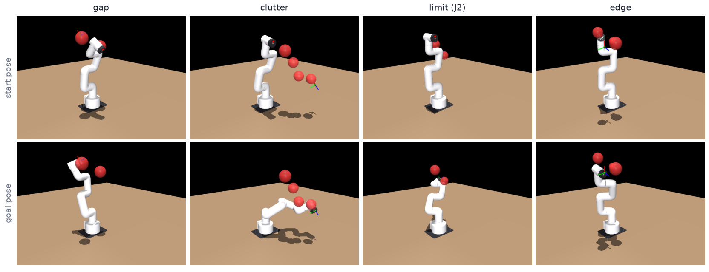
Shape set s4_shape
A third set covers cluttered scenes with non-spherical obstacles (75 episodes, 25 per type). It has the layout of the clutter type, four objects within 0–3.5 cm of the straight tool path, and the objects are boxes (half extents 1.2–2.5 cm per axis), cylinders (radius 1.2–2.2 cm, half height 2–3.5 cm) or a mixed draw of spheres, boxes and cylinders, with random orientations. The start and goal are at least 1 cm from the objects’ enclosing spheres, so every sphere-based method has a valid episode as well, and B2 (with exact shapes) finds a path within 20 s. About 1.5 million candidates were drawn for the 75 episodes.
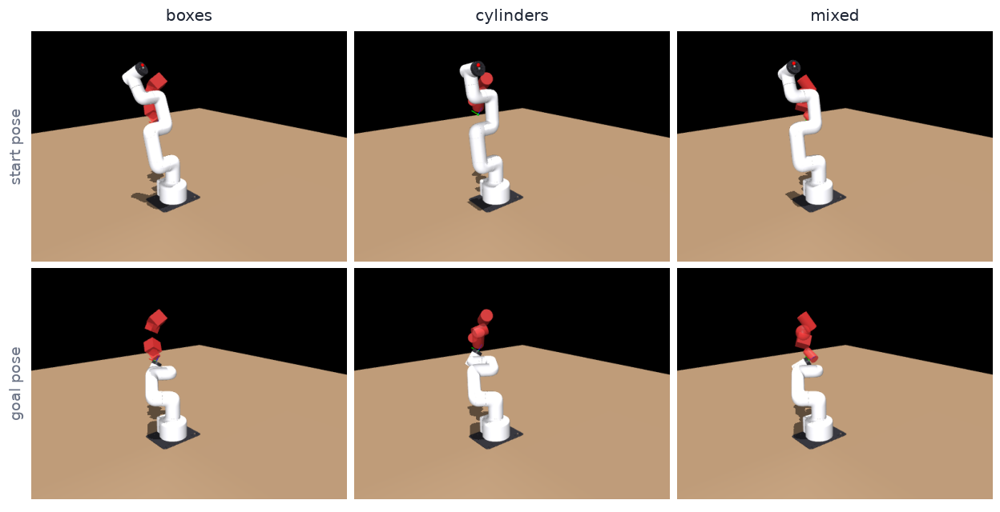
| Set | Arm | Episodes | Content |
|---|---|---|---|
| S4 test / validation | UR5e | 200 / 100 | 1–4 random spheres |
| s4_test / s4_val | MyCobot | 200 / 100 | 1–4 random spheres, B2 ≤ 20 s, horizon 900 |
| s4_chal | MyCobot | 100 | gap, clutter, limit, edge (25 each) |
| s4_shape | MyCobot | 75 | boxes, cylinders, mixed in clutter (25 each) |
| Planar P2, P3, P5a | 2-DOF | 1000 (PE3, PE4), 300 (PE8) | clutter, narrow passage, mass-perturbed plants |
5.5 Experimental Protocol
| Experiment | Stage | Compares | Seeds × steps |
|---|---|---|---|
| E1 | S1 | TD3 + HER against SAC + HER | 3 × 500k |
| E2 | S2 | SAC sparse + HER against SAC dense | 2 × 500k |
| E5 | S4 | pure SAC + HER; residual SAC with dense and with sparse reward | 3 × 1M each |
| E5b | S4 | accumulated-offset residual (v2 final) | 3 × 1M |
| PE1–PE9 | planar arm | the same questions on a 2-DOF arm | 5–10 × 50k–300k |
| MyCobot residual | S4 (MyCobot) | retrained additive residual against the cheap planner, zero-shot UR5e actor | 2 × 1M |
Checkpoint rule. A residual run is evaluated at two checkpoints. The primary checkpoint has the best validation score after both the α ramp and the critic warm-up have finished, so that selection cannot pick an untrained residual, which is identical to the base. The final checkpoint is the last one (1M steps). The MyCobot results use the final checkpoint.
Statistics. Trained methods report the seed mean with a 95% bootstrap interval over seeds, and a pooled Wilson interval over all test episodes that reflects episode-level variation only. Planners are deterministic and report the Wilson interval alone. Because the challenge and shape sets have 25 episodes per type, a type’s rate carries about ±0.1.
5.6 Hyperparameters
| Group | Setting | Value |
|---|---|---|
| Shared | networks; batch size | 3 × 256; 256 |
| Shared | parallel environments; gradient steps per transition | 4; 0.25 |
| Shared | discount γ | 0.98 with HER, 0.99 without |
| Shared | replay buffer | 500k (E1, E2); 1M (E5, E5b) |
| Shared | learning rate | 3×10−4 (SAC); 10−3 (TD3) |
| HER | strategy | “future”, k = 4 |
| E1, E2 | goal-distance curriculum | 0.6 rad, +0.3 rad per 80% success, up to 3.2; 20% of goals always full range |
| Residual | α ramp; critic warm-up | 0 → 0.3 over 150k steps; 50k gradient steps |
| Residual | penalty weight wres | 0.1 |
| Residual | entropy coefficient; target entropy; log-std bias | 0.01; −12; −3 |
| Residual | planner budget | drawn per episode from {1500, 3000, 6000} |
Dense-reward weights and wres were set once and not swept; this is listed as a limitation.
5.7 MyCobot 280 Hardware Setup
The real arm is an Elephant Robotics MyCobot 280 M5 with a suction head, controlled over USB (COM13, 115,200 baud) through pymycobot 4.0.7. The facts that the simulation and the runner rely on were measured on this arm.
| Item | Value |
|---|---|
| Safe joint limits (deg) | J1 ±170, J2 −130…85, J3 ±155, J4 ±165, J5 ±165, J6 ±180 |
| Single-call latency | get_angles 13 ms, send_angles 7 ms, is_moving 5 ms |
| Command rule | a command arriving less than about 10 ms after a send is dropped (a 230 ms stall follows); send, 30 ms wait, read is clean: cycle of 49–52 ms |
| Settled error | 0.5–0.75° short of target on every joint, in the direction of motion (deadband); up to 1.84° on the gravity-loaded J2 |
| Tracking | 0.5°/tick (10°/s) at 20 Hz: lag of about 1.5° (3 ticks); steps of 1° or more caused stalls of 270–530 ms |
| Forward-kinematics accuracy | 3.6 mm 3-D RMS (6.0 mm maximum) against the arm’s own get_coords, 15 poses; a steady offset of about 5–6 mm |
| Encoder resolution | 0.088° |
The runs were filmed with the laptop’s USB webcam, and a phone for the first tests. Each video is synchronised to the run by a 1 kHz beep that starts the episode when the microphone hears it, and otherwise by the arm’s first movement after a 5 s hold (accurate to about ±0.3 s). The virtual obstacles do not exist in the camera image, so they appear in the two model panels of each video. Figure 5.3 shows the two viewpoints of the simulation panels: a top isometric camera, and a side camera that matches the direction in which the real camera looks.
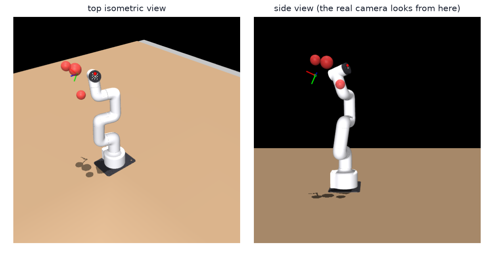
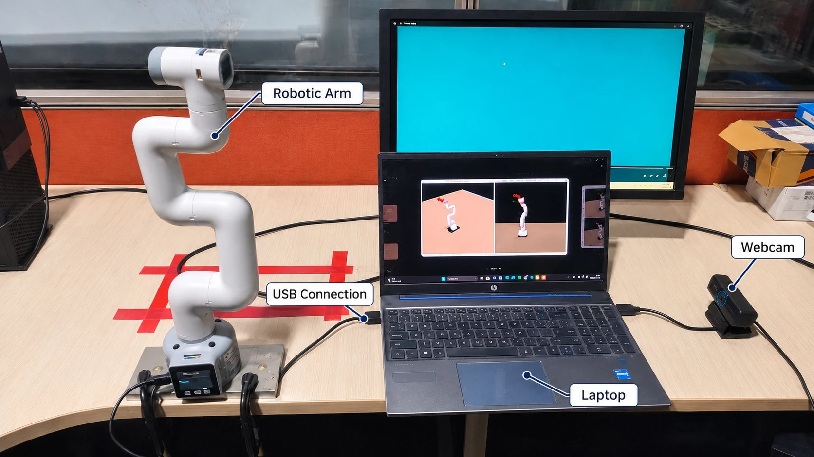
5.8 Compute and Software Environment
All training ran on CPU: an Intel i5-1240P laptop plus free Google Colab (2-core) and Kaggle (4-core) sessions. A one-million-step run took 1.5–5.3 hours at 52–189 steps per second on the UR5e. Seeds run elsewhere were merged back with configuration-hash checks, so a merged run is the run that its configuration says it is. The stack is MuJoCo 3.17, Stable-Baselines3 2.9.2, PyTorch (CPU) and Python 3.11. The MyCobot training and the real-arm runs used the same laptop, with the arm connected over USB.
5.9 Implementation Verification and Design Refinements
5.9.1 Tests
The UR5e package has 75 tests, the planar package 74 and the MyCobot package 11. Besides the usual unit tests they check that relabelled HER samples carry the right goal, that the collision penalty makes crashing worse than surviving in both reward modes, that MuJoCo and numpy forward kinematics agree, that a zero residual reproduces the base exactly, that the final-approach correction closes a static shortfall within its limits, and that rotated boxes and cylinders collide exactly as an independent geometric calculation says they should.
5.9.2 Three silent defects of goal-conditioned training
Three defects broke training without raising an error. Each looked like an algorithm that simply was not learning, and all three share one cause: anything in a transition that depends on the goal, or is lost when the goal is relabelled, must be recomputed or carried along with it.
| # | Defect | Symptom | Fix |
|---|---|---|---|
| 1 | Goal errors (goal minus tool) inside the observation | HER relabels the goal but not the errors, so about 80% of the training samples point at the wrong goal; E1 stayed at 0% after 120–160k steps | goal-independent observation; the errors are computed inside the policy from whichever goal is in use (GoalErrorExtractor) |
| 2 | The HER buffer of Stable-Baselines3 passes empty info dictionaries by default | collision and clearance penalties vanish from relabelled rewards | SafetyHerReplayBuffer stores the goal-independent term as one float (8 bytes) per transition and adds it back on every relabel; compute_reward raises on a missing term |
| 3 | A collision ended the episode with a one-off −10 | staying alive cost about −50 discounted, so crashing at step 9 (about −17) paid better; pure SAC crashed in 100% of episodes | absorbing penalty of Equation (3.12), tested so that crashing is worse than surviving any number of steps |
Defect 3 was found only because the first E5 run’s pure-RL arm collided in every episode. After the fix, collisions were spread through the episode like a random policy’s (median step 80), which confirmed that the exploit was gone.
5.9.3 Refinements on the MyCobot 280
- Inverse kinematics. A scalar solver took about 1 s per goal and starved B2’s 2 s budget, so B2 succeeded in only 17–25% of scenes. A batched damped-least-squares solver (25 ms per goal) brought it to 97%.
- Collision capsules. The first capsule radii (25–40 mm) made B2 fail on clutter that the real arm can pass; slimmer capsules (20–35 mm) fixed this. The radii are estimates and not measurements.
- Dry runs. The runner was tested with a simulated arm (lag 0.15 s, deadband 0.7°, noise 0.1°) on 30 episodes before it touched the real arm: B2 30/30, Base@3000 27/30 (two collisions), median final error 0.7 cm and 3.3° against the 1 cm and 5° limits, so the deadband uses most of the margin.
5.10 Chapter Summary
All methods share one environment, the same frozen test sets, the same checkpoint rule and the same metrics. The MyCobot 280 has its own scenes, horizon and hardware measurements. Three silent training defects and several MyCobot-specific refinements were found and fixed before the main experiments.
Chapter 6Results and Discussion
6.1 Introduction
This chapter reports the results in the order of the research questions. Sections 6.2 to 6.5 are development results: they were obtained on the UR5e (reaching without obstacles, motion planning in clutter, and the diagnosis of why the residual fails) and on the planar 2-DOF arm, to find out what the method does and why. Sections 6.6 to 6.9 are target-robot results: the MyCobot 280 in simulation, on the challenge and shape sets, and on the real arm. Section 6.10 answers the research questions, starting from what holds on the MyCobot. Success and collision rates are percentages of test episodes unless a value is given as a fraction. “Hybrid” is the cheap planner plus the residual; “Base@N” is the cheap planner alone.
6.2 Reaching Without Obstacles (E1, E2)
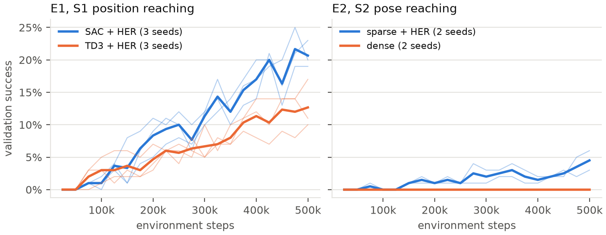
| Experiment | Success (per seed) | Final position error | Notes |
|---|---|---|---|
| E1 SAC + HER | 20.7% (19 / 23 / 20) | 22.2 cm | stuck short of the goal in 60% of failures |
| E1 TD3 + HER | 12.7% (11 / 17 / 10) | 29.1 cm | stuck in 49% of failures |
| E2 sparse + HER | 4.5% (3 / 6) | 35.4 cm | touches the table or itself in 38.5% of episodes |
| E2 dense | 0.0% (0 / 0) | 30.2 cm | ends closer to the goal but never within 1 cm and 5° |
SAC beat TD3 (RQ1), and sparse reward with HER beat dense reward on success but not on final error (RQ2). Both experiments fell far short of their targets within the step budget. They are reported as shortfalls: they show what pure RL achieved here, not what SAC can reach with more steps. A pilot with γ = 0.95 (an effective horizon of about 20 steps, against the roughly 80 needed for a 3.2 rad move) learned nothing; γ was then chosen from the step horizon of the task, and a goal-distance curriculum was added.
6.3 Motion Planning in Clutter (E5, E5b)
On the 200 held-out S4 scenes, full RRT-Connect succeeds in 99.0% of episodes. The cheap planner alone succeeds in 79.5% to 90.0%, depending on its budget, and no learned hybrid reaches it.
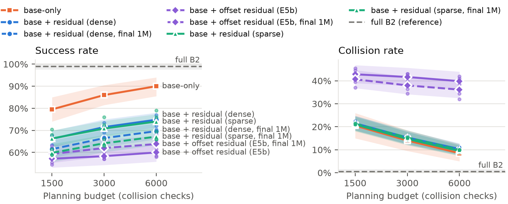
| Method | 1500 checks | 3000 checks | 6000 checks |
|---|---|---|---|
| Full B2 (reference) | 99.0 / 0.5 | 99.0 / 0.5 | 99.0 / 0.5 |
| Cheap planner alone | 79.5 / 20.5 | 86.0 / 14.0 | 90.0 / 8.5 |
| E5 dense residual | 66.2 [61.5] / 21.5 | 71.5 [66.5] / 15.3 | 74.8 [69.7] / 10.3 |
| E5 sparse residual | 66.3 [59.8] / 21.0 | 70.8 [64.2] / 14.7 | 74.0 [67.2] / 9.5 |
| E5b offset residual | 57.2 [59.3] / 42.8 | 58.3 [62.0] / 41.7 | 60.0 [63.8] / 39.8 |
| Pure SAC + HER | 0.0 / 53.8 | — | — |
- The gap is not noise. At 6,000 checks the dense hybrid’s 95% seed interval is 72.0–77.0%, entirely below the planner’s episode-level interval of 85.1–93.4%.
- More training makes E5 worse. The final checkpoint is below the primary in every E5 arm and budget. E5b’s final checkpoint is slightly better than its primary but still far below the planner.
- Pure RL from scratch learns nothing in one million steps: 0% success and collisions in 53.8% of episodes.
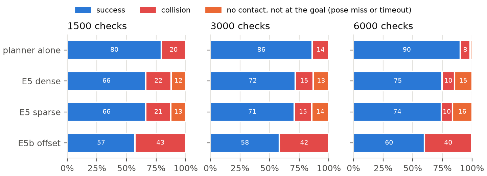
6.4 Why the Residual Fails: the Authority–Safety Dilemma
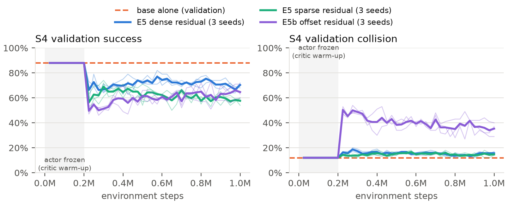
E5 has no authority (measured)
- The tracker cancels the residual. It re-aims at qref(t+1) every step, which takes back whatever the residual added the step before. On every unsaturated step (87% of steps) the residual moves the target by at most αΔqmax = 0.0120 rad (Appendix A.1).
- The collisions are the planner’s. At each budget the hybrid’s collision rate is within 2 points of the planner’s. Its whole loss is pose misses: 12.7–15.8% of episodes, against 0–0.5% for the planner.
- It spoils the goal pose. On episodes in which both avoid contact, the planner ends 0.41 cm and 0.9° from the goal and the hybrid 0.72–0.75 cm and 1.3°, enough to fail a 1 cm and 5° test.
E5b has authority but saturates (measured)
The offset ends episodes at a median of 0.26–0.30 rad, at or near its ±0.30 rad limit, in failures and successes alike. Across seeds and checkpoints, 87–96% of collisions happen with |o| at least 0.15 rad. Collisions rise two to five times above the planner’s.
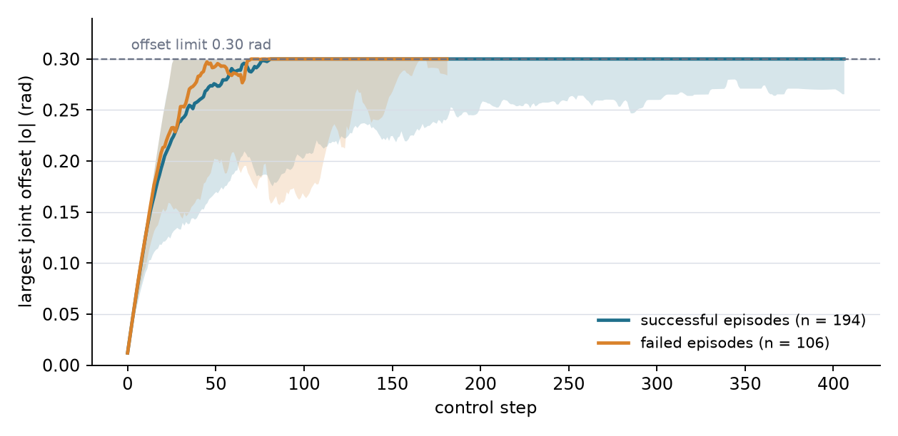
scripts/e5b_offset_trace.py.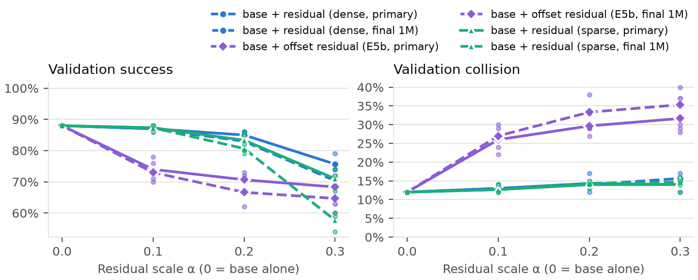
Reading. A correction bounded tightly enough to stay on the planner’s safe path cannot fix the planner’s failures. One free enough to fix them leaves the safe path. Neither learned the selective behaviour the claim needs: do nothing in the 80–90% of episodes where the planner succeeds, and act only where it fails.
Untested hypotheses for why neither learned selectivity
- The signal for when to act is sparse: only the 10–20% of episodes where the planner fails reward any correction.
- Max-entropy noise drifts through the integrator. SAC is rewarded for staying stochastic, and integrating random actions walks the offset to its limit.
- wres = 0.1 is weak against the reward scale, and the collision penalty arrives only after contact, not on approach.
6.5 Planar 2-DOF Companion Study
A planar two-link arm with an exactly computable configuration space serves as a fast and interpretable testbed. It also gives a best-known path length for every episode.
| Method | Success |
|---|---|
| SAC + HER | 78.8% |
| TD3 + HER | 63.6% |
| DDPG + HER | 42.1% |
| PPO, dense | 0.0% |
| SAC sparse + HER, no curriculum | 71.0% |
| SAC dense, with / without curriculum | 5.3% / 2.0% |
| Experiment | Budgets | Planner alone | Additive residual | Offset residual | Pure SAC + HER | Full B2 |
|---|---|---|---|---|---|---|
| PE3, P2 clutter | 4000 / 6400 / 9000 | 76.7 / 84.6 / 96.7 | 74.0 / 81.5 / 92.8 | — | 1.1 | 100.0 |
| PE4, P3 narrow passage | 700 / 2300 / 3500 | 80.0 / 85.7 / 88.4 | 71.7 / 76.6 / 79.0 | 77.8 / 82.4 / 84.3 | 0.2 | 99.9 |
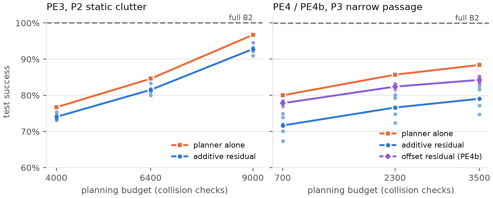
- Same pattern as E5. The additive hybrid is below its planner at every budget, with the planner’s collision rate. The gap grows with task difficulty: 1–4 points on PE3, 8–9 on PE4, 12–15 on the UR5e.
- The offset helps on the planar arm. It beats the additive residual by 5.8 points but stays 3.3 points below the planner, with 2–4 points more collisions and about 10% longer paths.
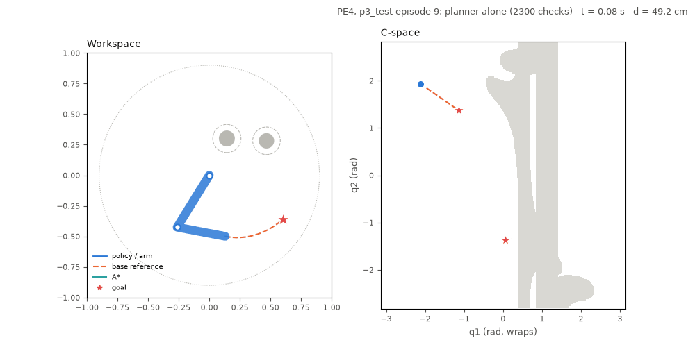
Torque control under model error (PE8)
| Controller | Exact mass | Mass ×0.8 | Mass ×1.2 |
|---|---|---|---|
| B5, computed torque | 100.0 | 10.3 | 10.7 |
| B5′, PD + gravity | 100.0 | 19.0 | 15.3 |
| Residual on B5′ | 43.0 | 33.0 | 30.3 |
| Pure SAC + HER | 0.1 | 0.1 | 0.1 |
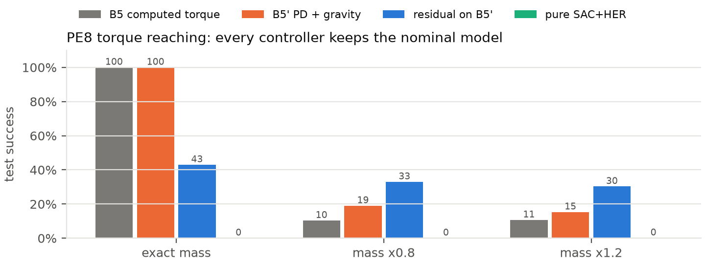
This is the one place where a residual beats its base: the base’s gravity term is systematically wrong on the perturbed plants, and there the residual roughly doubles success. It costs most of the exact-plant performance, which falls from 100% to 43%. PE8’s primary and final checkpoints coincide, because the runs are 300k steps long and checkpoints are kept every 100k.
Do planar rankings transfer to the UR5e? (PE9-lite)
| Design choice | 2-DOF | UR5e | Same ranking? |
|---|---|---|---|
| SAC against TD3 (+HER) | +15.2 | +8.0 | yes |
| sparse + HER against dense | +73.5 | +4.5 | yes |
| goal-distance curriculum on against off | +7.8 | +7.0 (1-seed probe) | yes |
| hybrid against planner alone (PE3 / PE4 against E5) | −3.1 / −9.1 | −14.5 | yes, yes |
| hybrid against pure RL (PE3 / PE4 against E5) | +80.4 / +76.4 | +71.5 | yes, yes |
| offset against additive residual | +5.8 | −13.2 | no |
| offset hybrid against planner alone | −3.3 | −27.7 | yes |
Eight of the nine rankings agree. The cheap testbed predicted the training choices and the headline result. It did not predict how much the offset redesign costs in safety, which is the part that depends on geometry: a two-dimensional configuration space against one to four spheres around a six-joint arm.
6.6 MyCobot 280 in Simulation
The deployment first asked whether the UR5e result carries over to a different arm. The UR5e residual actor was run unchanged in the MyCobot simulation (a zero-shot probe), and the residual was then retrained there with the E5 recipe, two seeds and one million steps.
s4_test (200 episodes, horizon 900), success / collision in %.| Method | 1500 checks | 3000 checks | 6000 checks |
|---|---|---|---|
| B2 (full planner) | 100 / 0.0 | 100 / 0.0 | 100 / 0.0 |
| Cheap planner alone | 89.5 / 10.0 | 92.5 / 5.0 | 93.5 / 2.5 |
| UR5e residual, zero-shot (primary, seed 0) | 89.5 / 10.0 | 92.0 / 5.5 | 93.0 / 3.0 |
| MyCobot residual, seed 0 (final, 1M) | 88.0 / 11.5 | 91.5 / 6.0 | 93.0 / 3.0 |
| MyCobot residual, seed 1 (final, 1M) | 89.5 / 10.0 | 92.5 / 5.0 | 93.5 / 2.5 |
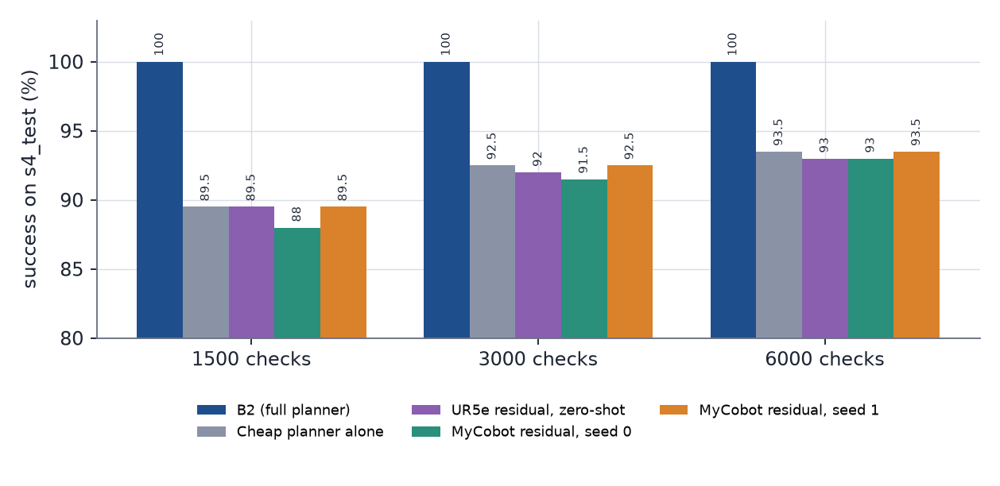
s4_test success by budget. The vertical axis starts at 80%.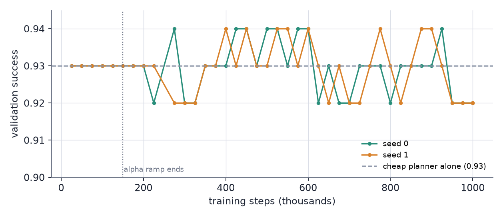
- The retrained residual equals the cheap planner. It stays within the 95% intervals of the planner (for example 88.0 [83.5, 92.5] and 89.5 [85.0, 93.5] against 89.5 at 1,500 checks). Seed 1 matches the planner exactly; seed 0 is 1–1.5 points lower.
- The zero-shot UR5e actor behaves the same way, within 0.5 points of the planner at every budget.
- The horizon matters more than the residual. At the first horizon of 489 steps the cheap planner was flat at 84.0, 81.0 and 80.5% for the three budgets: its longer reference paths ran out of time. Raising the horizon to 900 removed this (Section 5.4).
6.6.1 Size of the residual on the MyCobot (diagnostic)
s4_test episodes, both seeds at the final checkpoint and all three budgets. No result is stated here; the tables below show the layout to be filled and a verdict of two or three sentences goes under them.| Seed | Budget | Mean J1 | J2 | J3 | J4 | J5 | J6 | Largest value (any step, any joint) |
|---|---|---|---|---|---|---|---|---|
| 0 | 1500 | — | — | — | — | — | — | — |
| 0 | 3000 | — | — | — | — | — | — | — |
| 0 | 6000 | — | — | — | — | — | — | — |
| 1 | 1500 | — | — | — | — | — | — | — |
| 1 | 3000 | — | — | — | — | — | — | — |
| 1 | 6000 | — | — | — | — | — | — | — |
s4_test episodes (to be filled).| Controller | Budget | p5 | median | p95 | max |
|---|---|---|---|---|---|
| planner alone | 1500 | — | — | — | — |
| planner alone | 3000 | — | — | — | — |
| planner alone | 6000 | — | — | — | — |
| hybrid, seed 0 | 1500 | — | — | — | — |
| hybrid, seed 0 | 3000 | — | — | — | — |
| hybrid, seed 0 | 6000 | — | — | — | — |
| hybrid, seed 1 | 1500 | — | — | — | — |
| hybrid, seed 1 | 3000 | — | — | — | — |
| hybrid, seed 1 | 6000 | — | — | — | — |
| Seed | Budget | Different outcome | Better (fail to success) | Worse (success to fail) |
|---|---|---|---|---|
| 0 | 1500 | — | — | — |
| 0 | 3000 | — | — | — |
| 0 | 6000 | — | — | — |
| 1 | 1500 | — | — | — |
| 1 | 3000 | — | — | — |
| 1 | 6000 | — | — | — |
Verdict (to be written once the tables are filled).
6.7 Narrow Gaps, Clutter and Hard Goals (the Challenge Set)
The challenge set of Section 5.4 was evaluated in simulation with B2, the cheap planner and the retrained residual (seed 1, final checkpoint).
s4_chal (25 episodes per type), success / collision as fractions.| Method | gap | clutter (4 spheres) | limit (J2) | edge | all |
|---|---|---|---|---|---|
| B2 | 1.00 / 0.00 | 1.00 / 0.00 | 1.00 / 0.00 | 0.88 / 0.00 | 0.97 / 0.00 |
| Base@1500 | 0.44 / 0.56 | 0.68 / 0.32 | 0.76 / 0.24 | 0.08 / 0.92 | 0.49 / 0.51 |
| Base@3000 | 0.64 / 0.36 | 0.96 / 0.04 | 0.96 / 0.04 | 0.28 / 0.64 | 0.71 / 0.27 |
| Base@6000 | 0.68 / 0.24 | 1.00 / 0.00 | 1.00 / 0.00 | 0.56 / 0.20 | 0.81 / 0.11 |
| Hybrid@1500 | 0.44 / 0.56 | 0.76 / 0.24 | 0.72 / 0.28 | 0.08 / 0.92 | 0.50 / 0.50 |
| Hybrid@3000 | 0.64 / 0.36 | 0.96 / 0.04 | 0.92 / 0.08 | 0.28 / 0.64 | 0.70 / 0.28 |
| Hybrid@6000 | 0.68 / 0.24 | 1.00 / 0.00 | 0.96 / 0.04 | 0.56 / 0.20 | 0.80 / 0.12 |
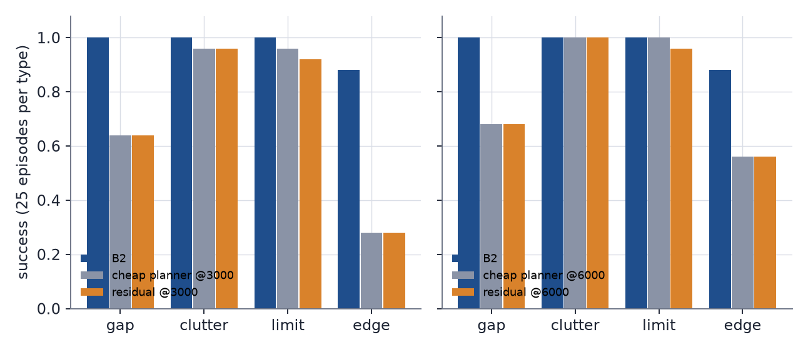
- The hard cases for the cheap planner are
edgeandgap, not clutter or the shoulder-limit type. At 6,000 checks the base still fails 44% of edge and 32% of gap episodes, while four-sphere clutter and the limit type are solved at 96–100% from 3,000 checks. - B2 solves every gap, clutter and limit episode. Its three edge failures end without a collision, 1.5 cm, 0.5 cm and 14.4 cm from the goal.
- The residual again equals its planner. Base and hybrid differ in only 1–3 of 100 episodes at each budget, and the aggregate success differs by at most 0.01.
6.8 Boxes and Cylinders in Clutter (the Shape Set)
s4_shape (25 episodes per type), success / collision as fractions.| Method | box | cylinder | mixed | all |
|---|---|---|---|---|
| B2 | 1.00 / 0.00 | 0.96 / 0.04 | 1.00 / 0.00 | 0.99 / 0.01 |
| Base@1500 | 0.64 / 0.36 | 0.64 / 0.36 | 0.48 / 0.52 | 0.59 / 0.41 |
| Base@3000 | 0.80 / 0.16 | 0.76 / 0.24 | 0.84 / 0.16 | 0.80 / 0.19 |
| Base@6000 | 0.96 / 0.00 | 0.84 / 0.12 | 0.88 / 0.12 | 0.89 / 0.08 |
| Hybrid@1500 | 0.64 / 0.36 | 0.64 / 0.36 | 0.48 / 0.52 | 0.59 / 0.41 |
| Hybrid@3000 | 0.84 / 0.12 | 0.76 / 0.24 | 0.84 / 0.16 | 0.81 / 0.17 |
| Hybrid@6000 | 0.96 / 0.00 | 0.84 / 0.12 | 0.88 / 0.12 | 0.89 / 0.08 |
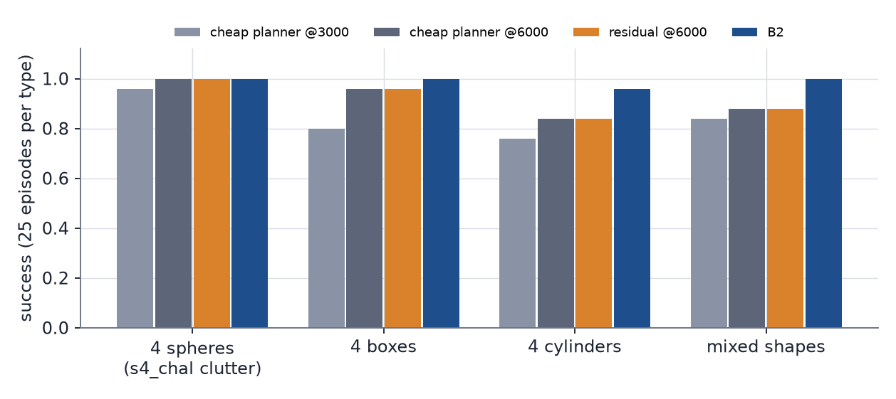
- Shapes cost the cheap planner relative to spheres. With four objects near the path, Base@3000 succeeds on 0.96 of the sphere scenes and 0.80 of the shape scenes (all 75), and Base@6000 on 1.00 and 0.89. Rotated boxes and cylinders block more of the path than the spheres do. Cylinders are the hardest (0.84 at 6,000 checks).
- B2 stays at 0.99. Its one failure is a collision in a cylinder episode.
- The residual neither helps nor hurts, even though it sees each object only as an enclosing sphere: base and hybrid differ in 0–2 of 75 episodes at each budget.
These sets have 25 episodes per type and one trained policy, so a type’s rate carries about ±0.1. The collision verdict is against the exact shape, and the hardware runs were not repeated on these sets.
On the real arm, one episode of each challenge and shape type was run in the firmware-segment mode (Section 6.9.6): 13 of 14 runs succeeded, and the one stop was B2 on the edge scene.
6.9 Real-Arm Results
The arm was driven in two ways. In the first (Sections 6.9.1 to 6.9.5) a new joint target is streamed every 50 ms, in steps of at most 0.5°, which caps the speed at 10°/s. In the second (Section 6.9.6) the same path is sent as a few firmware-planned segments, which is several times faster. Both use the same controllers and the same ten episodes.
6.9.1 Success and final error
The first 10 s4_test episodes were run on the arm with every controller, in the same order, at speed 20 with virtual obstacles. The hybrid is the seed-1 final residual with the cheap planner at 3,000 checks. In simulation, the same 10 episodes succeed for every method.
| Method | v1 success | v1 final error, median (max) | v2 success | v2 final error, median (max) | v2 orientation, median (max) |
|---|---|---|---|---|---|
| B2 | 9 / 10 | 0.79 (1.46) cm | 10 / 10 | 0.69 (0.96) cm | 3.5 (4.3)° |
| Cheap planner @3000 | 10 / 10 | 0.82 (0.97) cm | 10 / 10 | 0.59 (0.89) cm | 3.2 (4.2)° |
| Hybrid @3000 | 10 / 10 | 0.67 (0.97) cm | 10 / 10 | 0.53 (0.88) cm | 2.8 (4.2)° |
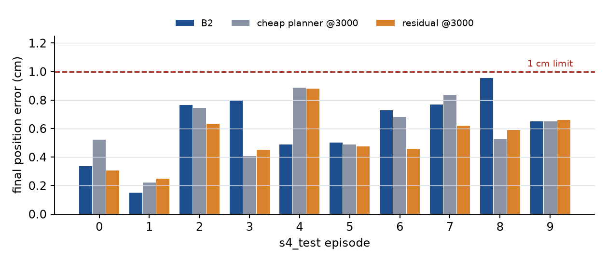
- No collisions and no safety aborts occurred in any of the 60 runs (30 per version).
- The v1 failure was systematic. B2 on episode 9 stopped 1.46 cm from the goal and stayed there. A re-run was identical (same encoder counts). The target was static and the shoulder stood 1.84° short, more than the deadband measured unloaded. TrimArm fixed it, and all 30 runs were repeated with it.
- The hybrid and the cheap planner are indistinguishable at 10 episodes, as in simulation: the residual does not beat its planner on the real arm. Ten episodes cannot separate differences below roughly 25 points.
- The two versions were not run in randomised order (v1 first, v2 later, on the same arm), so the improvement could include drift. It is large only for the one stalled episode.
6.9.2 Trajectory quality
| Method | duration (s) | tool path (mm) | path / straight line | joint path (deg) | peak joint speed (deg/s) | tracking error mean (max) (deg) | closest approach (cm) |
|---|---|---|---|---|---|---|---|
| B2 | 7.4 | 107 | 1.42 | 147 | 9.8 | 1.01 (1.56) | 0.92 |
| Cheap planner @3000 | 8.8 | 198 | 1.88 | 170 | 9.8 | 0.95 (1.60) | 1.45 |
| Hybrid @3000 | 9.0 | 195 | 1.85 | 176 | 10.0 | 0.97 (1.55) | 1.47 |
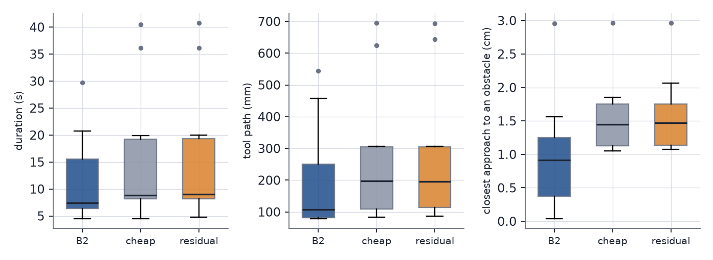
B2 paths are about 45% shorter and 15–20% faster than those of the cheap planner. The cheap planner and the hybrid are the same: the residual neither shortens nor smooths the path. Speed stays at the 10°/s cap. Peak acceleration (46–56°/s²) and jerk (about 290°/s³) are dominated by the 0.088° encoder step and the vibration, and are equal across methods, so they are not compared.
6.9.3 Model accuracy and clearance
- Model against the arm. At episode 0’s final pose, the arm’s own
get_coordsminus the model’s forward kinematics is [4.6, 2.8, 2.1] mm, 5.7 mm in 3-D, identical in 12 runs: a steady offset in line with the 3.6 mm RMS found on 15 poses. The success metric is computed from the model, so a reported 0.3 cm error could be up to about 0.9 cm in the arm’s own frame in the worst case. - Clearance to the virtual obstacles (model, measured joints): contact ticks were zero in all 30 runs. The closest approach was 0.0–0.3 cm for B2 (episodes 0, 3, 7) and at least 1.1 cm for the cheap planner and the hybrid. A straight joint-space move would have hit an obstacle in episodes 0, 8 and 9.
6.9.4 Vibration
The operator saw slight vibration during motion. A set of runs on episode 0 (B2, two runs per setting) tested the settings that could cause it.
| Setting | high-frequency motion (deg) | acceleration roughness (deg/tick²) | no-advance ticks |
|---|---|---|---|
| speed 20, a command every 50 ms (default) | 0.065 | 0.129 | 0% |
| speed 10 / speed 30, every 50 ms | 0.067 | 0.136 | 0% |
| speed 20, no end correction | 0.065 | 0.135 | 0% |
| speed 20 / speed 10, every 100 ms | 0.080 / 0.075 | 0.214 / 0.206 | 1% / 0% |
The speed setting has no effect, because the steps are below its cap. The end correction does not change the moving part. Commanding every 100 ms is rougher, which is why 50 ms was kept. Tick timing is steady (standard deviation 0.8 ms, maximum 56 ms). The 20 Hz log cannot resolve the vibration itself. Candidate causes are the servo restarting its motion profile at each command, the deadband, the gravity load on the shoulder and encoder quantisation; none was isolated.
6.9.5 Real arm, digital twin and simulation side by side
Videos 6.2 onward use the same five-panel layout: the camera on the left and, on the right, the digital twin (the real arm’s measured joint angles replayed in the model) and the simulation of the same episode, each from a top isometric camera and from the side (Figure 5.3). The obstacles are virtual and appear only in the model panels, and the model panels draw the manufacturer’s shell meshes of the MyCobot 280 M5 (from the mycobot_ros description package) over the unchanged capsule model; the meshes are only drawn and change nothing in the physics, collisions or results (the same episode gives an identical trajectory and outcome with and without them). The meshes live in assets/m5_meshes/, the renderers in scripts/render_mesh_compare.py and scripts/render_grid_compare.py.
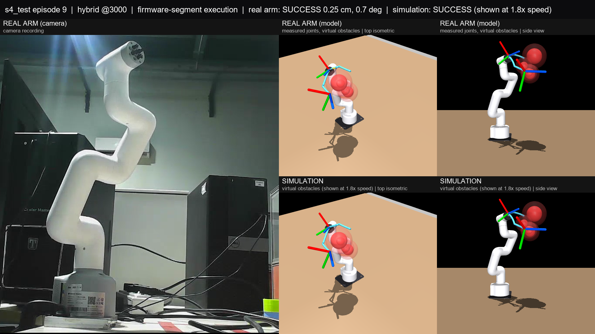
s4_test episode 0, hybrid @3000 (streaming).s4_test episode 7, B2.s4_test episode 7, hybrid @3000. Compare with Video 6.3: the same scene with a different controller.s4_test episode 8, hybrid @3000.s4_test episode 9, hybrid @3000.s4_test and one episode per challenge and shape type. A larger batch (episodes 10–19) and more episodes per type would narrow the gap that so few runs cannot resolve (about 25 points).6.9.6 Faster execution with firmware segments
Streaming is slow by construction: the 0.5° step per 50 ms was chosen because larger steps made the serial link stall for 270–530 ms, and every command restarts the arm’s own motion profile. A motion diagnostic on one joint (J1, 20° and 60° moves, no obstacles) measured how the arm behaves under other command styles.
| Command style | Move | time to arrive | rate (deg/s) | Remark |
|---|---|---|---|---|
| Streaming 0.5° every 50 ms, speed 20 (used so far) | 20° | 2.05–2.08 s | 9.6–9.8 | no stalls; stops 0.7° short |
One send_angles, speed 20 | 20° / 60° | 1.04 s / 2.4–2.5 s | about 35 | the firmware plans the move |
One send_angles, speed 40 | 60° | 1.55–1.61 s | about 71 | |
One send_angles, speed 60 | 60° | 1.39 s | 57–76 | little gain over speed 40 |
| 4 waypoints, next sent while moving (polled at about 70 ms) | 20° | 1.6–2.0 s | 11–15 | choppy; the polling loop was too slow to blend |
| Streaming 1° every 40 ms, send only, speed 50 | 20° | 0.95 s out, 1.76 s back | one send call blocked 449 ms | |
| Streaming 2° every 40 ms, send only, speed 50 | 20° | 2.1 s | the firmware lagged the commands |
One firmware-planned move is three to seven times faster than streaming, and larger streaming steps still stall even when nothing is read between sends. Every style stops 0.75–0.85° short of its target, the servo deadband. The readings were too slow (10–20 Hz during fast moves) to compare smoothness; that was not measured.
Segment execution. The runner plays the episode first in the model with the usual controller, thins the resulting joint path to a few waypoints (Douglas–Peucker, tolerance 6°), and sends each waypoint as one send_angles at speed 40. The arm settles at each waypoint before the next is sent. The policy and the plans are unchanged; the difference is that the residual’s effect is replayed from the simulation and not corrected tick by tick from the arm’s measurements. This is a change in the hardware protocol, and the results below are labelled accordingly.
Safety. Every segment is checked against the table, the arm itself and the virtual obstacles in their exact shapes, for the straight joint-space line and for any combination of the joints’ progress along it (a grid and random samples), and a segment that fails is split. During the run the arm is stopped on a joint limit, on a joint outside the span of its end values, on a persistent deviation from the line, on a segment not reached in time, or on a measured pose that touches anything in the model.
Firmware behaviour found. A move from standstill follows a straight joint-space line to within 1–1.5°. Sending the next waypoint while the arm is still moving makes the wrist (J4–J6) start 0.3–0.5 s late, and during fast moves the wrist readings freeze for 0.3–0.5 s. Earlier versions of the batch were stopped by safety checks that were too strict for this (stale readings, a servo stopping 1.6° short, a 1 s read stall); no collision occurred, the checks were relaxed where the cause was the reading and not the arm, and all 30 runs were repeated with the final code.
| Mode | Method | success | collisions | wall time (s) | final position error (cm) | final orientation error (°) |
|---|---|---|---|---|---|---|
| segments | B2 | 10 / 10 | 0 | 6.1 (18.4) | 0.35 (0.73) | 2.7 (3.9) |
| segments | Cheap planner @3000 | 10 / 10 | 0 | 4.7 (10.7) | 0.34 (0.81) | 2.7 (3.2) |
| segments | Hybrid @3000 | 10 / 10 | 0 | 5.0 (11.7) | 0.42 (0.53) | 2.1 (2.9) |
| streaming | B2 | 10 / 10 | 0 | 8.0 (31.8) | 0.69 (0.96) | 3.5 (4.3) |
| streaming | Cheap planner @3000 | 10 / 10 | 0 | 9.4 (43.3) | 0.59 (0.89) | 3.2 (4.2) |
| streaming | Hybrid @3000 | 10 / 10 | 0 | 10.0 (45.5) | 0.53 (0.88) | 2.8 (4.2) |
- Speed. The median time falls by about 1.7 to 2 times, and the slowest episodes by 3 to 4 times (the longest hybrid run from 45 s to 12 s). Segment counts are small: a median of 8 for B2 and 6 for the cheap planner and the hybrid.
- Accuracy and safety are not worse. All 30 runs succeed with no virtual collision and no abort, and the final errors are smaller than with streaming. The hybrid still does not beat its planner.
- Smoothness is not measured. The joint readings are too slow and the wrist readings freeze, so smoothness rests on the operator’s judgement and the camera. The streamed and segment runs were not randomised in order (streaming first, same arm).
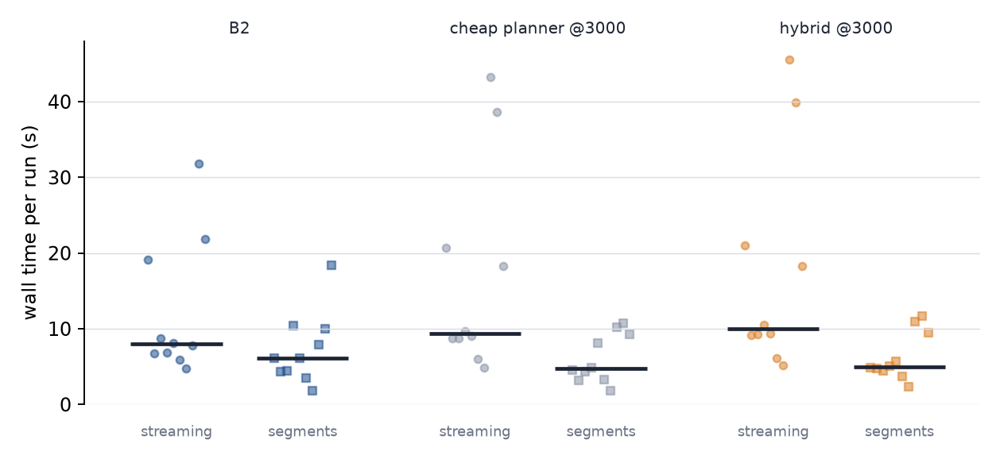
Videos 6.7 onward show the firmware-segment runs in the five-panel layout: the camera on the left, and on the right the real arm’s measured joint angles replayed in the model (top) and the simulation (bottom), each from a top isometric camera and from the side, the direction the real camera looks from. The simulation panels are time-compressed to the length of the real run and say so in their label. The red spheres, boxes and cylinders are the virtual obstacles. Each challenge and shape scene is shown for B2 and for the hybrid, except the edge scene, where the B2 run was stopped by the guard before completing and so has no video.
6.9.7 A learned reach controller that did not work (a limitation, not a result)
To check the learned approach on the MyCobot in a simpler setting than the residual, a goal-conditioned reach policy was trained in simulation with DDPG and hindsight experience replay (position goal in a 10 cm cube, 2 cm tolerance, sparse reward, tool-space actions converted to joint steps of at most 0.5 ° per tick). With a fixed start and no obstacle (R1), three seeds trained for 100,000 steps reached 27%, 6% and 68% of 100 test episodes, with no contact, against 100% for a scripted straight line to the goal; the learned controller did not reach the 90% bar within that budget, and the runs were stopped there. With one sphere placed on the straight line (R2), no detour in tool space could clear it: debug runs showed that the wrist links and the tool body trail the tool tip by a few centimetres and touch a sphere that the tip clears by 7 cm, and moving the sphere along the line, making it smaller, moving the goal cube outward and keeping 4 cm from the arm at the start left at most 5% of sampled episodes solvable by any hand-coded detour (0% at the planned placement). The three R2 policies trained as planned ended at 0% success with 55-88% contact on validation. These runs are reported as a limitation of the attempt (a short training budget and a task geometry that the tool-space action cannot satisfy on this arm), not as a result about the method, and nothing from them is used elsewhere in this report. No reach policy was run on the real arm.
6.9.8 Basic reach with one obstacle: simulation and real arm
| Stage | Controller | Success | Collision | Final error median / max (cm) | Steps median |
|---|---|---|---|---|---|
| Reach, no obstacle | scripted straight line | — | — | — | — |
| Reach, no obstacle | scripted detour | — | — | — | — |
| Reach, no obstacle | learned controller, seed 0 | — | — | — | — |
| Reach, no obstacle | learned controller, seed 1 | — | — | — | — |
| Reach, no obstacle | learned controller, seed 2 | — | — | — | — |
| Reach, one sphere | scripted straight line | — | — | — | — |
| Reach, one sphere | scripted detour | — | — | — | — |
| Reach, one sphere | learned controller, seed 0 | — | — | — | — |
| Reach, one sphere | learned controller, seed 1 | — | — | — | — |
| Reach, one sphere | learned controller, seed 2 | — | — | — | — |
| Controller | Runs | Success | Collisions | Final error median / max (cm) | Wall time median (s) |
|---|---|---|---|---|---|
| learned controller (best seed by validation) | — | — | — | — | — |
| scripted straight line | — | — | — | — | — |
| scripted detour | — | — | — | — | — |
6.10 Discussion of Findings
| RQ | Answer | Evidence |
|---|---|---|
| RQ1 | SAC learns best, then TD3, then DDPG; PPO fails. | E1: 20.7% against 12.7%; PE1: 78.8%, 63.6%, 42.1%, 0% |
| RQ2 | Sparse reward with HER beats dense on success, not on final error. | E2: 4.5% against 0%; PE2: 71.0% against 5.3% |
| RQ3 | No. On the MyCobot, the target arm, the residual equals its planner. On the development arms the additive residual is below its planner at every budget and the offset residual raises collisions two to five times. | Table 6.2, Table 6.7 |
| RQ4 | Yes, under a systematic model error: success roughly doubles. It gives up most of the exact-plant performance. | Table 6.5 |
| RQ5 | Mostly: 8 of 9 rankings agree. The offset redesign helps on the planar arm and hurts on the UR5e. | Table 6.6 |
| RQ6 | On the target arm the residual equals its planner in simulation, on the real arm (streamed runs), on harder scenes and on box and cylinder obstacles, as it did on the development arms. The cheap planner itself is weakest on goals near full reach, narrow gaps and shapes. | Tables 6.7–6.11, 6.12b |
The residual does not add to a planner that tracks a path. The result holds in every setting tested, and the measurements say why: the tracker cancels a bounded correction, and an unbounded one leaves the safe path. The planar arm shows that this is not a property of the UR5e, and the MyCobot shows that it is not a property of one arm or one simulator.
On the MyCobot the residual equals its planner, whereas on the UR5e it falls below it. A possible reason, not tested here, is scale. On the MyCobot, αΔqmax = 0.3 × 0.0087 rad = 0.0026 rad per step, against 0.012 rad on the UR5e, so a residual on the MyCobot has less room to spoil the goal pose. A direct test would train the MyCobot residual with a larger α or Δqmax and compare.
The cheap planner’s weakness depends on the scene, not on the residual. Goals near full reach, narrow gaps and rotated boxes and cylinders are where it loses most. These are also the cases a better base, a gated residual or a safety-filtered correction should target, which is the direction of the future work.
The hardware adds one lesson that simulation could not. A deadband and a gravity load can leave the arm short of a goal by more than the success tolerance allows, and the fix had to be a small controller outside the learned part. The trained policy was not changed for the real arm.
6.11 Chapter Summary
On the UR5e, full RRT-Connect succeeds in 99.0% of scenes, the cheap planner in 79.5–90.0%, and both residual designs do worse than the planner for different reasons. The planar arm reproduces this and agrees with the UR5e on 8 of 9 rankings. On the MyCobot, in simulation and on hardware, the residual equals its planner. The cheap planner fails most on goals near full reach, narrow gaps and non-spherical obstacles, and the residual does not change that. On the real arm, commanding firmware-planned segments instead of 50 ms steps made runs about twice as fast in the median and up to four times faster in the longest cases.
Chapter 7Conclusion and Future Scope
7.1 Summary of the Research
This project asked whether a cheap sampling-based planner combined with a learned residual correction can match a full-budget planner for collision-free pose reaching. The target was the MyCobot 280; a MuJoCo benchmark for the UR5e, two residual designs and a planar 2-DOF study were built to develop the method, and it was then deployed on the MyCobot 280, in simulation and on the real arm. The answer is no in every setting tested, and the measurements show why.
7.2 Major Findings
- RQ1 and RQ2. SAC beat TD3 (20.7% against 12.7% on the UR5e; 78.8% against 63.6% on the planar arm), and sparse reward with HER beat dense reward on success. Both UR5e reaching experiments fell short of their targets within the step budget.
- RQ3. Full RRT-Connect succeeded in 99.0% of the 200 cluttered scenes and the cheap planner in 79.5–90.0%. The additive residual lowered success to 66–75%; the offset residual raised collisions from 8.5–20.5% to about 40%. The additive residual has no authority because the tracker cancels it (at most 0.012 rad), and the offset has authority but saturates at its limit.
- RQ4 and RQ5. The only setting where a residual beat its base was torque control under a ±20% mass error. The planar arm agreed with the UR5e on 8 of 9 design rankings; the exception was the offset residual.
- RQ6. On the MyCobot 280 the residual equals its planner in simulation (93.5% against 93.5% at 6,000 checks for seed 1) and on the real arm (30 of 30 runs within 1 cm and 5° with the final-approach correction, no collisions, no aborts). The cheap planner is weakest on goals near full reach (56% at 6,000 checks), narrow gaps (68%) and boxes and cylinders (89%, against 100% on spheres at the same layout). Driving the arm by firmware segments instead of 50 ms streaming cut the median run time from 8–10 s to 5–6 s and the slowest run from 45 s to 12 s, with the same 30 of 30 success and no collisions.
- Methodology. Three silent defects of goal-conditioned training were found and fixed, and they are tested so that they cannot return unnoticed.
7.3 Contributions of the Work
The contributions listed in Section 1.8 stand as follows. The benchmark, the baselines and the versioned specification are reproducible from the repository. The negative result comes with its measured causes. The planar study shows that the pattern does not depend on the arm, and it identifies the setting in which a residual helps. The MyCobot deployment shows that the finding survives a change of arm, harder scenes, other obstacle shapes and real hardware. The three training defects and their fixes are reusable beyond this project.
7.4 Limitations of the Study
- Budget. 500k to 1M steps per run, 2 to 3 seeds, 0.25 gradient steps per transition and CPU-only compute. More steps could change the reaching and residual results.
- Virtual obstacles and no perception. The obstacle positions are given to the planner and the policy. On the real arm the obstacles are virtual keep-out spheres, and nothing physical was placed in the workspace. Real objects would need a camera and detection.
- Obstacle shapes. Training uses spheres. The shape set tests boxes and cylinders in simulation with the policy seeing enclosing spheres; on the arm one episode per shape type was run (virtual obstacles in their exact shapes). Walls, shelves, meshes and more than four objects are not tested.
- Goals near joint limits. The protocol (start near home, goal within 0.9 rad) cannot produce goals within about 15° of a limit, so they are not covered.
- One base design. A single degraded RRT-Connect with a straight-line fallback. A different base could leave the residual more room.
- Small hardware sample. Ten episodes per method, one run each, v1 and v2 not randomised. Model capsule radii and tool length are estimates, the servo deadband is not modelled, and the arm’s own coordinates differ from the model by about 6 mm.
- Motion quality. Streaming is limited to 10°/s and is not smooth. Firmware segments are faster, but their smoothness was not measured, and in that mode the residual is replayed from the simulation rather than corrected from measurements.
- Untuned weights. The dense-reward weights and wres were set once and not swept.
- Challenge and shape sets. 25 episodes per type, one policy, one episode per scene.
7.5 Future Research Directions
- Gated residual. Act only near predicted conflicts, such as low clearance on the planned path, so the default is the planner.
- Safety-filtered residual. Project the correction onto clearance-preserving actions with a control barrier function, or train with a Lagrangian collision constraint.
- TD3 for integrated actions. A deterministic actor with decaying noise tests whether max-entropy noise drives the offset to saturation.
- Demonstrations. Pre-train the residual on corrections derived from the full planner.
- Larger residual authority on the MyCobot. Train with a larger α or Δqmax to test the scale explanation of Section 6.10.
- Real objects. A camera with colour-based detection and a taught pixel-to-joint mapping would replace the virtual obstacles. The available guide uses this method on the same arm.
- Shapes in training. Retrain the residual with box and cylinder obstacles and a richer obstacle observation.
- A first-class hardware batch. More episodes, randomised order, and more than one episode per challenge and shape type on the arm.
- Measured smoothness and closed-loop segments. An accelerometer or a high-speed camera to quantify vibration and smoothness, and a segment mode in which the policy is re-run from the arm’s measurements at each waypoint.
Appendix AShort Derivations
This appendix proves two properties used in Chapters 3 and 6.
A.1 Authority bound of the additive residual
Let qtarget be the current integrated target and let the base command of Equation (3.20) be unsaturated, so that |(qref(t+1) − qtarget)/Δqmax| ≤ 1 in every joint. The additive controller applies a = clip(abase + απres, −1, 1) and integrates it, giving
when the sum is not clipped. Since |πres| ≤ 1, the deviation of the new target from the reference is at most αΔqmax = 0.3 × 0.04 = 0.012 rad per joint on the UR5e (0.0026 rad on the MyCobot), whatever the policy outputs. At the next step the tracker aims at qref(t+2) from this target, so the deviation does not accumulate. Where the base command is saturated or the sum is clipped, the residual can only move the command less. The bound explains the measured 0.0120 rad on the 87% of unsaturated steps in Section 6.4.
A.2 The absorbing collision penalty orders crashing below surviving
Every non-collision step gives a reward of at least rmin, so the discounted return of surviving any number of steps is at least
when rmin is negative and the sum is taken to infinity, which only makes the bound lower than any finite episode’s return. A collision gives the absorbing reward Rcoll = rmin/(1 − γ) − wc, which is lower than this bound by wc > 0. Crashing is therefore worse than surviving any number of steps. A fixed collision reward of −10, as used first, is above the discounted cost of staying alive (about −50), which is why crashing at step 9 (about −17) paid better.
Appendix BReproducing the Results
Setup and tests (UR5e and planar arm)
py -3.11 -m venv .venv .venv/Scripts/python -m pip install --index-url https://download.pytorch.org/whl/cpu torch==2.14.1 .venv/Scripts/python -m pip install -r requirements.lock .venv/Scripts/python -m pip install -e ".[dev,viz]" .venv/Scripts/python -m pip install -e 2-dof python -m pytest # UR5e suite (75 tests) python -m pytest 2-dof # planar suite (74 tests)
Training and tables (UR5e)
python scripts/train.py --exp configs/exp/e5.yaml --run residual --seed 0 python scripts/launch.py --exp configs/exp/e5.yaml --workers 2 --threads 1 python scripts/e5_table.py # results/tables/e5.md python scripts/thesis_figures.py # learning curves, validation curves, outcome split, PE3 / PE4, PE8
MyCobot 280 (from mycobot/)
python -m pytest tests/test_mcrl.py # 11 tests
python scripts/make_challenge.py # testsets/s4_chal.npz
python scripts/make_shapes.py # testsets/s4_shape.npz
python scripts/evaluate.py --set s4_chal --methods b2 --budgets 1500 3000 6000 \
--run results/runs/m5/residual_b99f130c_s1 --checkpoint final
python scripts/breakdown.py s4_chal s4_shape # per-type tables
# real arm (needs the arm on USB; --dry-run uses a simulated arm)
python scripts/run_real.py --set s4_test --episode 8 --method hybrid --budget 3000 \
--run results/runs/m5/residual_b99f130c_s1 --checkpoint final --dry-run
python scripts/run_real.py --set s4_test --episode 8 --method hybrid --budget 3000 --execute # streaming, real arm
# real arm, firmware segments (Section 6.9.6)
python scripts/run_segments.py --set s4_test --episode 9 --method hybrid --budget 3000 \
--speed 40 --tol 6 --run results/runs/m5/residual_b99f130c_s1 --checkpoint final --dry-run # check the plan on a simulated arm
python scripts/run_segments.py --probe --execute # small multi-joint straight-line test (moves the arm)
bash scripts/seg_batch.sh # the 30-run segment batch
python scripts/seg_summary.py # segments against streaming
python scripts/motion_diag.py COM13 --only incr,p2p --speeds 20,30,40 # motion diagnostic, J1 only
# videos: one continuous recording, stitched offline
python scripts/film_batch.py run --name chal1 --set s4_chal --episodes 2 25 50 75 --methods b2 hybrid
python scripts/film_batch.py make --name chal1 --layout grid # five-panel videos in results/media/
These commands were run again on a fresh clone of the repository (the 11 MyCobot tests pass; the dry runs of run_real.py and run_segments.py, seg_summary.py and breakdown.py run, and the real-arm commands refuse to move the arm without --execute). Two things are not in the repository and must be supplied. The trained checkpoints (*.zip in each run directory) are too large to commit, so the commands with --run need the run directory copied from the training machine or retrained. The raw webcam recordings (results/video/*_webcam.mp4, 633 MB) are also left out, so film_batch.py make can only be repeated where they exist; the finished five-panel videos are committed in results/media/.
References
- Kuffner, J., LaValle, S. (2000). RRT-Connect: an efficient approach to single-query path planning. ICRA 2000.
- Lillicrap, T. et al. (2015). Continuous control with deep reinforcement learning (DDPG). arXiv:1509.02971.
- Fujimoto, S., van Hoof, H., Meger, D. (2018). Addressing function approximation error in actor-critic methods (TD3). arXiv:1802.09477.
- Haarnoja, T. et al. (2018). Soft Actor-Critic: off-policy maximum entropy deep reinforcement learning with a stochastic actor. ICML 2018, arXiv:1801.01290.
- Andrychowicz, M. et al. (2017). Hindsight Experience Replay. arXiv:1707.01495.
- Silver, T. et al. (2018). Residual Policy Learning. arXiv:1812.06298.
- Johannink, T. et al. (2019). Residual reinforcement learning for robot control. ICRA 2019, arXiv:1812.03201.
- Sundaralingam, B. et al. (2023). cuRobo: parallelized collision-free minimum-jerk robot motion generation. arXiv:2310.17274.
- Qureshi, A. H. et al. (2019). Motion Planning Networks. ICRA 2019, 2118–2124, arXiv:1806.05767.
- Fishman, A. et al. (2022). Motion Policy Networks. CoRL 2022, arXiv:2210.12209.
- Bhuiyan, T. et al. (2023). Deep-reinforcement-learning-based path planning for industrial robots using distance sensors as observation. arXiv:2301.05980.
- Ying, F. et al. (2025). URPlanner: a universal paradigm for collision-free robotic motion planning based on deep reinforcement learning. arXiv:2505.20175.
- Schulman, J. et al. (2017). Proximal Policy Optimization algorithms. arXiv:1707.06347.
- Zhou, Y. et al. (2019). On the continuity of rotation representations in neural networks. CVPR 2019, arXiv:1812.07035.
- Agarwal, R. et al. (2021). Deep reinforcement learning at the edge of the statistical precipice. NeurIPS 2021, arXiv:2108.13264.
- Kavraki, L. E., Svestka, P., Latombe, J.-C., Overmars, M. H. (1996). Probabilistic roadmaps for path planning in high-dimensional configuration spaces. IEEE Transactions on Robotics and Automation 12(4), 566–580.
- LaValle, S. M. (1998). Rapidly-exploring random trees: a new tool for path planning. Technical Report 98-11, Iowa State University.
- Karaman, S., Frazzoli, E. (2011). Sampling-based algorithms for optimal motion planning. The International Journal of Robotics Research 30(7), 846–894.
- Sucan, I. A., Moll, M., Kavraki, L. E. (2012). The Open Motion Planning Library. IEEE Robotics & Automation Magazine 19(4), 72–82.
- Chitta, S., Sucan, I., Cousins, S. (2012). MoveIt! IEEE Robotics & Automation Magazine 19(1), 18–19.
- Ratliff, N., Zucker, M., Bagnell, J. A., Srinivasa, S. (2009). CHOMP: gradient optimization techniques for efficient motion planning. ICRA 2009.
- Kalakrishnan, M., Chitta, S., Theodorou, E., Pastor, P., Schaal, S. (2011). STOMP: stochastic trajectory optimization for motion planning. ICRA 2011.
- Schulman, J. et al. (2014). Motion planning with sequential convex optimization and convex collision checking. The International Journal of Robotics Research 33(9), 1251–1270.
- Ichter, B., Harrison, J., Pavone, M. (2018). Learning sampling distributions for robot motion planning. ICRA 2018, arXiv:1709.05448.
- Faust, A. et al. (2018). PRM-RL: long-range robotic navigation tasks by combining reinforcement learning and sampling-based planning. ICRA 2018, arXiv:1710.03937.
- García, J., Fernández, F. (2015). A comprehensive survey on safe reinforcement learning. Journal of Machine Learning Research 16, 1437–1480.
- Achiam, J., Held, D., Tamar, A., Abbeel, P. (2017). Constrained policy optimization. ICML 2017, arXiv:1705.10528.
- Alshiekh, M. et al. (2018). Safe reinforcement learning via shielding. AAAI 2018, 32(1), arXiv:1708.08611.
- Dalal, G. et al. (2018). Safe exploration in continuous action spaces. arXiv:1801.08757.
- Ames, A. D. et al. (2019). Control barrier functions: theory and applications. European Control Conference 2019, 3420–3431, arXiv:1903.11199.
- Cheng, R., Orosz, G., Murray, R. M., Burdick, J. W. (2019). End-to-end safe reinforcement learning through barrier functions for safety-critical continuous control tasks. AAAI 2019, 33(1), 3387–3395, arXiv:1903.08792.
- Zeng, A. et al. (2020). TossingBot: learning to throw arbitrary objects with residual physics. IEEE Transactions on Robotics 36(4), 1307–1319, arXiv:1903.11239.
- Alakuijala, M. et al. (2021). Residual reinforcement learning from demonstrations. arXiv:2106.08050.
- Tobin, J. et al. (2017). Domain randomization for transferring deep neural networks from simulation to the real world. IROS 2017, 23–30, arXiv:1703.06907.
- Zhao, W., Queralta, J. P., Westerlund, T. (2020). Sim-to-real transfer in deep reinforcement learning for robotics: a survey. IEEE SSCI 2020, arXiv:2009.13303.
- Ibarz, J. et al. (2021). How to train your robot with deep reinforcement learning: lessons we have learned. The International Journal of Robotics Research 40(4–5), 698–721.
- Todorov, E., Erez, T., Tassa, Y. (2012). MuJoCo: a physics engine for model-based control. IROS 2012, 5026–5033.
- Raffin, A. et al. (2021). Stable-Baselines3: reliable reinforcement learning implementations. Journal of Machine Learning Research 22(268), 1–8.
- Haarnoja, T. et al. (2018). Soft Actor-Critic algorithms and applications. arXiv:1812.05905.
- Elephant Robotics. myCobot documentation (GitBook). https://docs.elephantrobotics.com/docs/gitbook-en/ (accessed 6 November 2026).
- Elephant Robotics.
pymycobot, Python API for the myCobot arms. https://github.com/elephantrobotics/pymycobot (accessed 6 November 2026). - Elephant Robotics.
mycobot_ros, ROS packages and URDF and mesh description of the myCobot arms. https://github.com/elephantrobotics/mycobot_ros (accessed 6 November 2026). - Mnih, V. et al. (2015). Human-level control through deep reinforcement learning. Nature 518(7540), 529–533.
- Schaul, T. et al. (2015). Universal value function approximators. ICML 2015, PMLR 37.
- Plappert, M. et al. (2018). Multi-goal reinforcement learning: challenging robotics environments and request for research. arXiv:1802.09464.
- Levine, S. et al. (2016). End-to-end training of deep visuomotor policies. Journal of Machine Learning Research 17(39), 1–40.
- Kalashnikov, D. et al. (2018). QT-Opt: scalable deep reinforcement learning for vision-based robotic manipulation. CoRL 2018, PMLR 87, arXiv:1806.10293.
- Gu, S. et al. (2017). Deep reinforcement learning for robotic manipulation with asynchronous off-policy updates. ICRA 2017, 3389–3396, arXiv:1610.00633.
- Peng, X. B. et al. (2018). Sim-to-real transfer of robotic control with dynamics randomization. ICRA 2018, 3803–3810, arXiv:1710.06537.
- Chebotar, Y. et al. (2019). Closing the sim-to-real loop: adapting simulation randomization with real world experience. ICRA 2019, 8973–8979, arXiv:1810.05687.
- Zhao, T. Z. et al. (2023). Learning fine-grained bimanual manipulation with low-cost hardware. Robotics: Science and Systems XIX, arXiv:2304.13705.
- Brunke, L. et al. (2022). Safe learning in robotics: from learning-based control to safe reinforcement learning. Annual Review of Control, Robotics, and Autonomous Systems 5, 411–444, arXiv:2108.06266.
- Qureshi, A. H. et al. (2021). Motion planning networks: bridging the gap between learning-based and classical motion planners. IEEE Transactions on Robotics 37(1), 48–66.
- Kawaharazuka, K. et al. (2022). Self-supervised learning of visual servoing for low-rigidity robots considering temporal body changes. IEEE Robotics and Automation Letters 7(3), 7881–7887.
- Kawaharazuka, K. et al. (2023). Daily assistive view control learning of low-cost low-rigidity robot via large-scale vision-language model. IEEE-RAS Humanoids 2023, 1–6, arXiv:2312.07451.
Software and models: MuJoCo, MuJoCo Menagerie (UR5e and Robotiq 2F-85 models, vendored in assets/menagerie/, upstream licences apply), Stable-Baselines3, PyTorch, and the manufacturer’s URDF for the MyCobot 280.
Verification. On 6 November 2026 every arXiv number was checked against the arXiv listing (title, first author, year), and the journal and conference entries against Crossref (title, first author, venue, year, volume, pages) or the publisher’s page; three titles and two author lists were corrected (references 4, 8, 11 and 12). Not verified in full: reference 17 is a technical report whose number appears as 98-11 and as 9811 in different catalogues; the proceedings volumes cited as PMLR (references 44 and 47) are given without page numbers; references 40–42 are web pages whose existence and titles were checked but whose content was not; the arXiv-only entries (2, 6, 29, 33, 39, 45) are preprints. Co-authors are given as “et al.” wherever the full list was not checked.